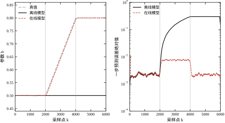
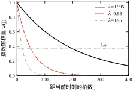
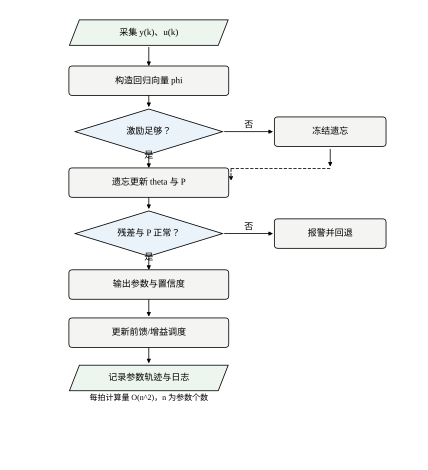
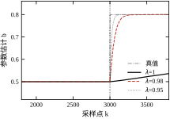
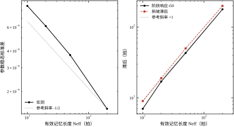
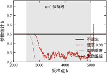

本章的贯穿例子是一个一阶对象，采样周期 T_s=1 s：
y(k)=a\,y(k-1)+b(k)\,u(k-1)+e(k),\qquad a=-0.92 \tag{23-1}
其中 u 是输入，y 是带噪声的测量输出，e 是标准差 0.002 的白噪声。b 是随工况变化的增益，前 2000 拍恒为 0.5，之后在 2000 拍内线性漂到 0.8，变化幅度 60%。
如果在漂移之前做一次离线最小二乘，得到 \hat b=0.5001，然后把这个模型固化进控制器，会发生什么？用真实仿真跑一遍：漂移前一步预测误差的均方根约 0.002，与噪声持平；漂移结束后，参数偏差的均方根升到 0.2999，而输入幅值为 1，等价的一步预测误差也在 0.3 量级，是噪声水平的 150 倍。这个 0.3 不是随机误差，而是系统性偏置——模型仍然“自洽”，只是它描述的对象已经不存在了。
把同一批数据交给带遗忘因子的递推最小二乘（\lambda=0.98），参数在斜坡段的跟踪误差降到 7.4\times10^{-3}，约为离线模型的 1/40。这剩下的 1/40 不是随机误差，而是跟踪滞后：指数窗看到的是“若干拍之前”的参数，滞后拍数乘以漂移斜率正好等于残差（§23.3.4 给出定量关系）。两条轨迹画在图 23-1 的左图，右图是对应的预测误差。这张图是本章全部内容的动机：参数会变，模型必须跟着变；而“跟着变”的代价必须能算出来。

要注意右图的纵轴是对数刻度。离线模型的误差在漂移区间内单调抬升，到漂移结束后稳定在一个高位；在线模型的误差在整个过程中保持在噪声量级附近，只在漂移最陡的区间略有上浮。这条“上浮”就是跟踪滞后，本章第 3 节会给出它与遗忘因子的定量关系。
工程上谈“参数时变”，通常混着三种完全不同的机理，处理方式差别很大。
表 23-1 时变来源的三类时间尺度与处理方式
| 类别 | 典型来源 | 时间尺度 | 典型对象 | 是否需要在线更新 |
|---|---|---|---|---|
| 慢漂移 | 磨损、结垢、催化剂失活、电池老化 | 天到月 | 换热器、反应器、伺服丝杠 | 定期离线重辨识即可 |
| 中速漂移 | 温度、载荷、物料批次、油液黏度 | 分钟到小时 | 液压系统、注塑机、风机 | 在线辨识收益最大 |
| 快速变化 | 摩擦状态切换、接触刚度、网络延迟 | 秒到分钟 | 机器人关节、离合器 | 在线辨识可能跟不上，需鲁棒控制 |
| 结构性变化 | 传感器故障、阀门卡涩、断料 | 一次跳变 | 过程装置 | 属于故障诊断（第 36 章），不是辨识 |
这张表的第一列决定了工具选择。慢漂移用“定期停机重辨识”最经济，因为在线辨识需要持续激励，而持续激励本身会影响产品质量；中速漂移是在线辨识的主战场，因为停机重辨识的频率高到不可接受；快速变化则往往超出递推算法的跟踪能力，正确做法是把它当成不确定性交给鲁棒或自适应控制处理（第 61 章），而不是硬调小遗忘因子。
判断属于哪一类，不看参数变化的绝对值，看变化的时间常数与闭环带宽的比值。比值大于 100，离线重辨识足够；在 10 到 100 之间，在线辨识加适度遗忘最合适；小于 10，任何基于历史数据的估计都会明显滞后，此时估计器的输出只能用于监控，不能直接进入控制律。
还有两个维度必须分开看：变化的幅度决定“要不要更新”，变化的速度决定“能不能在线更新”。一个只漂 5% 的增益，即便漂得很快，也不值得为它承担 86 倍的噪声放大；一个漂 60% 的增益，即便漂得很慢，也迟早要让模型跟上。本章的贯穿例子把幅度定在 60%、时间尺度定在 2000 拍，正是为了让这两个维度都落在“需要且能够在线更新”的区间里。
现场区分“增益漂移”与“零点漂移”有一个简单办法：在两个不同工作点上各取一段稳态数据，分别算 \Delta y/\Delta u 与截距。斜率变了是增益漂移，斜率不变而截距变了是零点漂移。前者要靠更新 b，后者要靠更新偏置项（本章的 ARX 没有常数项，实际装置上通常需要加一个 c）。两者的辨识结果都会表现为“参数变了”，但处置完全不同，这也是 §23.5.4 边界五的来源。
漂移速率的量级不能靠感觉，要从历史数据里量出来。做法是取过去几个月的运行数据，按固定窗口逐段做离线最小二乘，把每段的增益估计连成一条趋势线，再对趋势线做直线拟合，斜率就是 §23.2.3 与 §23.7.3 里的 \rho。若趋势线在窗口之间跳变而不是连续上升，说明参数是分段常值而非缓慢漂移，应改用重置检测，而不是一味减小 \lambda。
量的时候有两个陷阱。一是窗口太短，单段估计的噪声会淹没趋势，看上去像随机波动；经验上窗口内至少要有 20 个有效记忆长度，或者让窗口内的增益变化小于估计标准差的 3 倍。二是把工况变化误当成时间漂移：若趋势线的拐点与换料、换季、检修的时间对得上，那么相关的自变量不是时间而是工况，应当做增益调度（第 55 章），而不是在线辨识。
离线辨识（第 16–18 章）给出的是一个“在某段数据上最优”的参数，它有四个无法回避的局限。
第一是停机成本。做一次合格的辨识实验需要激励信号、足够的时长和数据采集链路，产线上这意味着停料或降负荷。对连续过程，一周停一次已是极限，而中速漂移的时间常数可能只有几小时。把这两个数字放在一起就能看出问题：假设漂移时间常数 4 小时、停机重辨识周期 1 周，那么模型在 98% 的时间里都处于“参数已经变了但没有更新”的状态。
第二是工况覆盖。离线实验只能在有限的工况点上做，参数在这几个点之间如何插值、超出范围如何外推，模型本身给不出答案。多工况建模（第 26、28 章）能缓解，但需要大量数据，且工况组合随产品切换而变。
第三是误差传播路径不同。离线模型的误差进入控制器后有两条路：反馈路径上，误差会被回路增益抑制；前馈路径上，误差直接叠加到执行器，没有任何抑制。参数漂移 60% 时，前馈通道的输出偏差也是 60%，这在第 46 章的复合控制里是必须处理的问题。在线辨识的价值，很大程度上是给前馈通道提供“当下”的参数。
第四条局限不常被提起，但它决定了离线模型在长期运行中的可信度：离线模型不会报告自己已经失效。它的残差基线是辨识时定下的一个常数，运行中无论工况怎么迁移，控制器看到的都只是“残差变大了”，而残差变大既可能是模型不准，也可能是干扰变强、执行器卡涩、传感器漂移。没有在线更新的模型无法把这几种原因分开，也就无法给出“该不该修模型”的判断。本章的贯穿例子里，离线模型在漂移后的参数 RMSE 是 0.29987，而噪声只有 0.002，相差 150 倍——这个差距在数据上极其明显，但模型本身没有任何机制去发现它。
反过来也要说清楚：在线辨识不是默认选项，它是有成本的。它要求传感器链路可靠、执行器允许适度激励、维护人员能读懂协方差与新息这四个量，任何一条不满足，收益都会被维护成本吃掉。一个常见的误判是把“模型不准”直接归因为“需要在线辨识”，而实际问题可能是传感器漂移、阀门卡涩或时间戳错位——这三类问题在线辨识都解决不了，反而会因为参数被强行拉去补偿硬件故障，把故障掩盖在“参数漂移”的名义下。
所以工程上的判断顺序是：先确认硬件与数据链路正常，再确认参数确实随时间变化，最后才决定用哪种在线算法。本章后面给出的所有阈值、联锁与验收条目，都建立在这个顺序之上；跳过后两步直接写递推代码，得到的往往是一个能跑但没人敢用的模块。
把上面的场景抽象出来，工程上要回答五个问题，本章逐个给出工具。
这五个问题的答案互相牵制：想让第 2 问的滞后小，就得减小记忆长度，第 3 问的噪声就变大；想让第 3 问的噪声小，就得加长记忆，第 2 问就滞后。本章的主线就是把这个折中写成一条可以计算的曲线，而不是靠“调一调看效果”。第 4 问是安全底线，第 5 问决定它能不能放进控制器。
五个问题有固定的回答顺序。先回答第 1 问，因为它决定后面所有的量纲：参数变化的时间常数若只有几十拍，遗忘因子就必须很小，此时第 3 问的噪声代价会大到无法接受，正确的结论是“这个对象不适合在线辨识”而不是“再调小一点”。顺序颠倒的典型后果是：先选了一个 \lambda=0.9，发现噪声太大，再去论证“噪声可以滤波”，最后把估计器的相位裕度全部吃掉。
如果只能记住一句话：在线辨识不是“把最小二乘放进循环里”，而是用一条可计算的记忆长度，在“跟得上漂移”与“不被噪声带跑”之间选一个写明代价的折中。
本章按“定义—推导—离散—边界—验证”推进。§23.2 给出时变参数的三种描述、指数窗准则、随机游走模型，以及估计输出必须携带的四样东西（参数、协方差、新息、激励能量）；§23.3 推导递推公式、标量稳态方差、跟踪滞后、协方差爆炸与三条修补路线，并把 Kalman 参数滤波统一进来；§23.4 讲清数值实现、量纲、采样周期与计算量；§23.5 给出适用边界与现场可执行动作；§23.6 用五组实验逐一验证前四节的结论；§23.7 收束为一份错误清单。
不同读者的路径：只做现场调试的，读 §23.1、§23.3.5、§23.5；要做自适应控制的，读 §23.3 全部、§23.4.2，之后接第 61 章；要做学习型参数估计的，读 §23.3.1–§23.3.3 与 §23.5.4，之后接第 80 章。三条路径的共同落点是 §23.6 的脚本，不跑一遍，公式里的数都只是别人的数。
最后交代记号。k 是离散拍序号，T_s 是采样周期，带括号的 b(k) 表示随拍变化的真值，带帽的 \hat\theta(k) 表示第 k 拍更新后的估计，P(k) 是参数协方差。\lambda 无量纲，越接近 1 记得越久；N_{\mathrm{eff}}=1/(1-\lambda) 的单位是拍。所有仿真数字都来自 T_s=1\ \mathrm{s}、噪声标准差 0.002 的一组固定种子实验，换成别的量纲时，结论的形状不变，数值会按比例缩放。
反例一：不做遗忘，参数永远停在初始值。 对同一个 60% 的阶跃漂移，\lambda=1 的递推最小二乘在阶跃后 3000 拍仍然停在 0.5 附近，尾段参数误差为 64.4%，一步预测误差与离线模型相当。原因很直接：\lambda=1 时协方差 P 单调收缩到零，增益随之趋于零，新数据的权重为零。结论：不遗忘的递推算法等价于一次离线辨识，只是省了存储。
反例二：遗忘太强，噪声被放大 86 倍。 在参数恒定的数据上，\lambda=1 的估计标准差为 1\times10^{-5}，\lambda=0.9 时为 8.6\times10^{-4}，相差 86 倍。这 86 倍会原样进入前馈通道和增益调度表。若参数在整段运行中只漂 5%，那么换来这点跟踪能力的代价，是估计噪声从 10^{-5} 涨到 8.6\times10^{-4}，而跟踪能力在这次运行里只用上一次。结论：遗忘强度必须与参数漂移幅度匹配，不能凭“响应快”选。
反例三：激励不足时，任何遗忘都会把参数带跑。 让输入在 2500 拍到 5000 拍之间保持为零（设备稳态保温、机械臂静止保持），\lambda=0.98 的估计在 2500 拍内偏到 46%，协方差迹增长到 1.7\times10^{20}；加一个“回归能量低于阈值就冻结遗忘”的判断后，同一段的偏差是 0.2%。结论：在线辨识必须有激励监控，且这条监控要独立于遗忘因子的选择。
这个反例里的阈值不能随手定成“\|\varphi\|^2>0”这类形式判据。本章的正常工况回归能量均值是 1.12，十分位数是 1.00，而故障段是 0；把阈值放在 0.01，相当于要求回归量模长大于 0.1，比正常值低一个数量级，既能挡住激励消失，又不会因为短时小幅调整而误冻结。更低的阈值挡不住缓慢衰减的激励，更高的阈值会在正常调节过程中频繁冻结，两种错误都会让估计在关键时刻失去更新。
本节只保留后面推导真正会用到的定义。递推最小二乘的静态版本、偏差分析、持续激励的完整理论在第 18 章；闭环辨识的可辨识性在第 21 章；本节只补“参数随时间变”带来的新东西。
同一个物理漂移，可以用三种方式写成数学模型，它们对应不同的算法假设。
| 描述 | 数学形式 | 适合的算法 | 典型场景 |
|---|---|---|---|
| 分段常值 | \theta(k)=\theta_0+\Delta\theta\cdot\mathbf{1}(k\ge k_0) | 遗忘因子 + 重置检测 | 换料、换模、阀门卡涩 |
| 缓慢漂移 | \theta(k)=\theta_0+\rho k 或光滑函数 | 指数窗、小遗忘 | 温度、磨损、结垢 |
| 随机游走 | \theta(k+1)=\theta(k)+w(k) | Kalman 参数滤波 | 摩擦、载荷随机变化 |
三种描述不是互斥的：真实的参数轨迹往往是一段平台、一次跳变、再接一段缓慢漂移。指数窗算法用同一个 \lambda 同时应付三种情形，这是它的通用性来源，也是它在每种情形下都不是最优的原因。工程上必须明确“当前主要面对哪一种”，否则无法回答“\lambda 该取多少”。
选哪一种描述，取决于参数轨迹的形状，而形状可以从数据里看出来。把分段辨识得到的参数序列做自相关：缓慢衰减到零，接近随机游走；在某个非零值附近振荡衰减，是围绕固定值的平稳波动，对应 AR(1) 而不是随机游走；长时间不变、偶尔跳一步，是分段常值。三种形状对应的算法参数完全不同：随机游走用带小 Q 的 Kalman，平稳波动用 \lambda=1 配适当的 P_0，分段常值用重置检测。
本章统一用指数窗，是因为它对三种形状都给出“可用但不最优”的结果，而“一套代码覆盖三种情形”在工程上的价值，往往高于“每种情形都最优”。若某条回路的参数形状非常明确，例如只有换料时的一次阶跃，那么专用算法的效果会明显好于通用遗忘，这也是 §23.3.6 把周期重置单独列为一条路线的原因。
用一个具体的换算把三种描述连起来。连续一阶对象 G(s)=K/(\tau s+1) 经零阶保持离散化后，得到 a=\mathrm{e}^{-T_s/\tau}、b=K(1-\mathrm{e}^{-T_s/\tau})。取 K=6.25、\tau=12\ \mathrm{s}、T_s=1\ \mathrm{s}，算得 a=0.9200、b=0.5000，正好是本章的真值。本章把 a 写成 -0.92，相当于在正向极点之外叠加了半拍纯延迟：|a| 与 b 不变，因此由式 (23-36) 得到的 K=6.25、\tau=12.0\ \mathrm{s} 也不变，只是响应的符号逐拍翻转。引入这个负号是为了让参数估计问题在数值上更“难”一点——极点在 -0.92 时，回归量 y(k-1) 的符号交替，两个参数的相关性比正向极点时更强。
从这个换算还能看出“参数时变”在物理上意味着什么。K 变化对应阀门特性或换热效率变化，\tau 变化对应热容或阻力变化。两者在离散模型里都表现为 a 与 b 同时变化，而 a、b 的联合变化又很难从数据里唯一分解——这正是 §23.5.4 讨论的可辨识性问题在参数层面的根源。
表 23-1 中“结构性变化”一列被单独拿出来，是因为它不属于参数时变：阀门卡涩改变的是模型结构（增益变成强非线性或死区），用线性参数的递推算法去追，只会得到一个在两种工况之间来回跳的估计，既不能用于控制，也不能用于诊断。判断依据是残差：参数漂移时残差保持在噪声量级，结构变化时残差出现持续的单边偏置。
把式 (23-1) 推广到一般阶次，写成时变 ARX 形式：
y(k)=\varphi^{\mathsf T}(k)\,\theta(k)+e(k) \tag{23-2}
其中回归向量与参数向量分别为
\varphi(k)=\begin{bmatrix}-y(k-1)&\cdots&-y(k-n_a)&u(k-1)&\cdots&u(k-n_b)\end{bmatrix}^{\mathsf T},\qquad \theta(k)=\begin{bmatrix}a_1(k)&\cdots&a_{n_a}(k)&b_1(k)&\cdots&b_{n_b}(k)\end{bmatrix}^{\mathsf T} \tag{23-3}
这个写法把“时变”全部压进了 \theta(k)，回归向量本身只用测量值，不含待估参数。这个分离很关键：它使得每一步的更新都是线性的，递推公式才能成立。
本章的全部结论建立在三条假设之上，写清楚它们比记住公式更重要。
假设 A1（结构不变）：阶次 n_a,n_b 与延迟拍数在整个运行期间不变，只有数值在变。若延迟从 2 拍变成 3 拍，那不是参数时变，而是结构变化，递推算法无法处理。
假设 A2（噪声白且不相关）：e(k) 为零均值白噪声，且与 \varphi(k) 不相关。这条假设在实际中经常被违反：测量噪声经过低通滤波后变成有色噪声，ARX 的最小二乘估计会产生偏差（见第 18 章 §18.4）。在线辨识不解决这个偏差，它只是把偏差也一起“跟踪”了。若偏差随工况变化，在线估计的轨迹里会混入偏差的变化，误判为参数漂移。
假设 A3（慢时变）：在一个有效记忆长度内，参数的变化量与参数本身相比足够小。这条假设的定量形式是 \|\theta(k)-\theta(k-N_{\mathrm{eff}})\|\ll\|\theta(k)\|。它决定了遗忘因子的下限——参数变化越快，需要的记忆越短，而记忆短到一定程度，估计的方差就会大到不可用。
三条假设里，A2 最容易被违反，也最容易被忽略。工业现场的测量几乎都经过低通滤波，滤波后的噪声在几个采样周期内是相关的；同时未建模的动态（阀门死区、管道传输）也会以有色残差的形式出现。ARX 在这种数据上给出的参数是有偏的，偏差方向取决于噪声的相关结构。在线辨识无法消除这个偏差，它只能让偏差随时间缓慢变化。若偏差本身随工况变化，估计轨迹里就会混入“假漂移”，调度表按这个轨迹去改，反而会把偏差固化进控制器。
选 ARX 而不是 ARMAX 或 OE，是一个明确的工程折中。ARX 的回归量全部是可测量，参数以线性方式进入，因此能写成三式递推；ARMAX 需要同时估计噪声模型，递推形式变成增广最小二乘，参数与噪声模型耦合，收敛性和数值稳定性都差一些；OE 的参数以非线性方式进入，在线更新需要解一个非线性优化问题，计算量与不确定性都不可接受。折中的代价就是 A2 的偏差。若现场噪声相关严重，正确的做法不是换模型结构，而是先对 u、y 做同样的预白化滤波，再辨识 ARX——滤波器的极点会被吸收进 a，只要记录下滤波器的参数，就能在换算 K、\tau 时扣掉。
阶次的确定不在线做。n_a、n_b 应当从离线辨识（第 16–18 章）继承，在线算法只更新数值，不改结构。原因有两个：在线选阶次需要对每个候选模型做残差检验，判据阈值难以在控制器里长期维护；更要紧的是，阶次切换会让参数向量维度变化，协方差矩阵必须重新初始化，估计会短暂失去意义，而这段时间往往正是工况最不稳定的时候。
若现场确实出现“阶次不够”的迹象——残差自相关在某个延迟处出现明显尖峰，且换用高阶离线模型后显著改善——正确做法是停机重做离线辨识，把新阶次固化进程序，而不是让在线算法自己去试。这一点与 §23.5.4 的第一条边界是同一件事：在线辨识只负责数值更新，不负责结构学习。
还有一条容易被忽略的区分：大范围工况变化不是参数时变，而是非线性。同一条液压缸，在 10% 行程和 90% 行程处测得的“增益”不同，本质是流量-压力特性的非线性。用线性时变模型去拟合它，得到的 \theta(k) 其实是工作点的索引。这种描述在局部是有效的，但外推到未经历过的工况就会失效。工程上的正确用法是：把在线估计的参数与可测的工作点（温度、位置、流量）一起记录，先看它们是否有稳定的函数关系，再决定是“在线更新参数”还是“建立增益调度表”（第 55 章）。
离线最小二乘对所有样本一视同仁。要让估计跟着参数走，最直接的办法是给旧数据打折，于是得到指数窗准则：
J_k(\theta)=\sum_{i=1}^{k}\lambda^{\,k-i}\left(y(i)-\varphi^{\mathsf T}(i)\theta\right)^2,\qquad 0<\lambda\le 1 \tag{23-4}
\lambda 称为遗忘因子。\lambda=1 时退化为普通最小二乘；\lambda<1 时，第 i 个样本的权重是 \lambda^{k-i}，越老的数据权重越低。图 23-2 画出三条权重曲线：\lambda=0.995 的权重在 400 拍后仍有 0.13，\lambda=0.98 在 100 拍后只剩 0.13，\lambda=0.95 在 50 拍后就接近零。

权重曲线直接给出“有效记忆长度”的定义。权重之和为
\sum_{j=0}^{\infty}\lambda^{j}=\frac{1}{1-\lambda}\triangleq N_{\mathrm{eff}} \tag{23-5}
N_{\mathrm{eff}} 的物理含义是等效样本数：指数窗的数据量与 N_{\mathrm{eff}} 个等权样本相当。它不是“用到了多少拍数据”——指数窗在理论上用到了全部历史，只是老数据的权重可以忽略。
三个常用的换算关系必须记住：
指数窗之所以能写成递推，根源在对式 (23-4) 求导后得到的两个累加量。记
R_k=\sum_{i=1}^{k}\lambda^{k-i}\varphi(i)\varphi^{\mathsf T}(i),\qquad f_k=\sum_{i=1}^{k}\lambda^{k-i}\varphi(i)y(i) \tag{23-4a}
则加权正规方程为 R_k\hat\theta_k=f_k。把上标 k 换成 k-1 再乘 \lambda，立刻得到
R_k=\lambda R_{k-1}+\varphi(k)\varphi^{\mathsf T}(k),\qquad f_k=\lambda f_{k-1}+\varphi(k)y(k) \tag{23-4b}
这两个式子说明：指数窗把“重新加权全部历史”变成了“旧矩阵乘 \lambda 再加一项”。§23.3.1 的递推公式就是对 (23-4b) 反复应用矩阵求逆引理的结果。若没有这个乘 \lambda 的结构，加权最小二乘就只能每拍重算，计算量随运行时间线性增长。
与滑动窗口相比，指数窗的取舍很清楚。滑动窗口存最近 N 拍数据，每拍要做 O(Nn^2) 的累加，且数据“进窗出窗”时估计会出现台阶状跳变；指数窗只存 P 与 \theta，每拍 O(n^2)，权重连续衰减，没有边界效应。代价有两个：一是没有“精确用了多少样本”的概念，N_{\mathrm{eff}} 只是等效值；二是对野值不鲁棒，一个大幅野值会在 N_{\mathrm{eff}} 拍内持续影响估计，而滑动窗口在 N 拍后就把它彻底移出。工程上对付野值的正确做法是在入口做限幅与质量码判断（§23.5.1），而不是指望遗忘因子把它忘掉。
表 23-2 给出常用取值。表中的时间常数一列会在 §23.3.4 用实验数据核对，这里先给出量级。
表 23-2 遗忘因子与有效记忆长度的对应关系
| 遗忘因子 \lambda | N_{\mathrm{eff}} | 95% 覆盖（拍） | T_s=1 s 时的时间常数 | 适用参数变化时间常数 |
|---|---|---|---|---|
| 1.000 | 无穷 | 全部历史 | — | 不变化 |
| 0.999 | 1000 | 3000 | 1000 s | 小时级以上 |
| 0.995 | 200 | 600 | 200 s | 十分钟级 |
| 0.990 | 100 | 300 | 100 s | 五分钟级 |
| 0.980 | 50 | 150 | 50 s | 分钟级 |
| 0.950 | 20 | 60 | 20 s | 十秒级 |
| 0.900 | 10 | 30 | 10 s | 秒级 |
表的最后一列是经验规则：参数变化的时间常数应不小于 5N_{\mathrm{eff}}，否则估计会明显滞后（§23.3.4 的实测滞后正好等于 N_{\mathrm{eff}} 拍）。这条规则把“选 \lambda”变成了一个可以用现场数据核对的动作：先估计参数漂移的时间常数，再查表。
指数窗是对“旧数据打折”，还有一种等价的看法：参数自己在随机地走。写成随机游走模型：
\theta(k+1)=\theta(k)+w(k),\qquad w(k)\sim N(0,Q) \tag{23-6}
y(k)=\varphi^{\mathsf T}(k)\theta(k)+e(k),\qquad e(k)\sim N(0,R) \tag{23-7}
式 (23-6) 表示“参数每一步都可能随机变一点”，Q 是变化的剧烈程度；式 (23-7) 就是观测方程。在这两个方程下，最小方差估计由 Kalman 滤波给出，两步递推为
P^{-}(k)=P(k-1)+Q,\qquad K(k)=\frac{P^{-}(k)\varphi(k)}{R+\varphi^{\mathsf T}(k)P^{-}(k)\varphi(k)} \tag{23-8}
\hat\theta(k)=\hat\theta(k-1)+K(k)\left[y(k)-\varphi^{\mathsf T}(k)\hat\theta(k-1)\right],\qquad P(k)=P^{-}(k)-K(k)\varphi^{\mathsf T}(k)P^{-}(k) \tag{23-9}
与遗忘因子 RLS 对照可以看出三件事。第一，Q 扮演的角色就是遗忘：Q=0 时 P 单调收缩，等价于 \lambda=1；Q 越大，P 被“顶起来”越多，等效记忆越短。第二，Kalman 的 P 是后验协方差，有明确的概率含义，而 RLS 的 P 只是“逆信息矩阵”，量纲相同但解释不同。第三，Kalman 形式多了一个可调入口 R：传感器噪声已知时可以直接填，不必靠试。
把标量情形推到底，可以得到两者的定量对应。设 \varphi 的模为 1，稳态时 P^{-} 满足
P^{-}=\frac{q+\sqrt{q^{2}+4qR}}{2} \tag{23-10}
稳态增益为 K_{\mathrm{ss}}=P^{-}/(R+P^{-})，它对应的等效遗忘因子是 \lambda_{\mathrm{eff}}=1-K_{\mathrm{ss}}。取 R=4\times10^{-6}（噪声标准差 0.002），表 23-3 给出三个 Q 取值的换算结果。
表 23-3 随机游走方差与等效遗忘因子（R=4\times10^{-6}）
| Q | P^{-} | K_{\mathrm{ss}} | \lambda_{\mathrm{eff}} | 等效 N_{\mathrm{eff}} |
|---|---|---|---|---|
| 1\times10^{-9} | 6.4\times10^{-8} | 0.0157 | 0.9843 | 64 |
| 5\times10^{-9} | 1.4\times10^{-7} | 0.0347 | 0.9653 | 29 |
| 2\times10^{-8} | 2.9\times10^{-7} | 0.0682 | 0.9317 | 15 |
这张表说明：调 Q 与调 \lambda 是同一件事的两种参数化。选哪一种取决于信息来源——知道传感器噪声就选 Q，只有“想记多少拍”的直觉就选 \lambda。§23.6 的实验 E 会验证：按表 23-3 的 \lambda_{\mathrm{eff}} 去跑 RLS，得到的阶跃响应时间和稳态标准差与 Kalman 一致。
当 Q\ll R 时（工程上几乎总是如此），式 (23-10) 可以化简。此时根号内 q^2 相对 4qR 可以忽略，P^{-}\approx\sqrt{qR}，于是
K_{\mathrm{ss}}\approx\frac{\sqrt{qR}}{R}=\sqrt{\frac{q}{R}},\qquad \lambda_{\mathrm{eff}}\approx1-\sqrt{\frac{q}{R}} \tag{23-10a}
用 q=10^{-9}、R=4\times10^{-6} 核对：\sqrt{q/R}=\sqrt{2.5\times10^{-4}}=0.0158，与表中 K_{\mathrm{ss}}=0.0157 只差 0.6%。这条近似把“选 Q”变成了一个心算题：想让等效记忆长度是 50 拍，就取 \sqrt{q/R}=0.02，即 q=4\times10^{-4}R；本章 R=4\times10^{-6}，于是 q=1.6\times10^{-9}，与表中 10^{-9} 同量级。它同时说明为什么 Q 的合理取值往往小得离谱：R 是毫伏级的电压方差，Q 要再小四个数量级才对应几十拍的记忆。
两个噪声参数的来源也不同。R 可以直接从传感器手册或稳态残差估出来，属于“可测”；Q 没有直接测量手段，只能按“参数每拍可能变多少”的物理判断给。这就是 §23.6.6 建议先用 \lambda 调、再反算 Q 的原因：\lambda 至少还能用“记多少拍”这个直觉去猜，Q 连猜都无从下手。
一个只输出 \hat\theta 的在线辨识器，在工程上是不可用的，因为现场无法判断这一刻的参数该不该信。可用的辨识器必须同时输出四样东西。
第一是参数估计 \hat\theta(k)。这是使用者唯一直接需要的东西，但它的单位必须与物理量对应：a_i 无量纲，b_i 的单位是“输出单位/输入单位”。单位不清的参数无法写进前馈增益。
第二是协方差 P(k) 或其对角元。\sqrt{P_{ii}(k)} 是第 i 个参数的标准差估计，可以直接与参数的允许误差比较。参数漂移 1% 而标准差是 5%，说明这次漂移根本不可辨识；反过来，参数没漂而标准差是 0.1%，说明估计可信，可以作为诊断依据。
第三是新息 \varepsilon(k)=y(k)-\varphi^{\mathsf T}(k)\hat\theta(k-1)。它的均值反映模型偏差，它的自相关反映噪声结构是否变化。参数缓慢漂移时新息保持在噪声量级；模型结构变化（阀门卡涩、传感器漂移）时新息出现持续的单边偏置。这条信号是第 36 章故障诊断的输入。
第四是激励能量 \|\varphi(k)\|^2。它决定当前这一步的更新是否有信息量。这个量必须单独监控，因为协方差 P 在激励不足时的表现具有欺骗性：P 会增大，看上去“更不确定”，但增益的方向完全由噪声决定，更新反而更危险。
四样东西的记录方式也有讲究。若每拍都存四个双精度浮点数，6000 拍只有 192 KB，但连续跑一年就是 1 GB（按 1 s 节拍计），多数控制器没有这个空间。工程上的做法是分层记录：参数每拍算、每 10 拍存一次；协方差只存迹与对角元；新息存窗口 RMS 与最大值；激励能量存窗口最小值。这样一年的数据量降到百兆级，同时保留了全部趋势信息。若事后要复算，用参数轨迹与回归量就能完整重放，不必存原始波形。
四样东西合起来才构成一个“可审计”的辨识器：参数给出结论，协方差给出置信度，新息给出模型是否仍然成立，激励能量给出这一次更新是否应当被采纳。§23.5 会把这四样东西变成具体的阈值与联锁动作。
本节从加权最小二乘推出递推公式，再推出三个可直接用于选参数的结论：稳态噪声灵敏度、跟踪滞后、协方差发散。三者的推导都不长，但每一个都能在 §23.6 的实验中找到对应的数据点。
对式 (23-4) 求导并令其为零，得到加权正规方程。定义信息矩阵与相关信息向量为
R(k)=\sum_{i=1}^{k}\lambda^{\,k-i}\varphi(i)\varphi^{\mathsf T}(i),\qquad f(k)=\sum_{i=1}^{k}\lambda^{\,k-i}\varphi(i)y(i) \tag{23-11}
则 \hat\theta(k)=R^{-1}(k)f(k)。把求和拆成“上一拍整体乘 \lambda”加“本拍一项”，得到两个递推式
R(k)=\lambda R(k-1)+\varphi(k)\varphi^{\mathsf T}(k),\qquad f(k)=\lambda f(k-1)+\varphi(k)y(k) \tag{23-12}
如果每拍直接对 R(k) 求逆，计算量是 O(n^3)，n 为参数个数。用矩阵求逆引理把“秩一修正的逆”展开，就能把 O(n^3) 降到 O(n^2)。引理的形式是
\left(A+\varphi\varphi^{\mathsf T}\right)^{-1}=A^{-1}-\frac{A^{-1}\varphi\varphi^{\mathsf T}A^{-1}}{1+\varphi^{\mathsf T}A^{-1}\varphi} \tag{23-13}
取 A=\lambda R(k-1)、P(k-1)=R^{-1}(k-1)，代入并整理，得到标准的三式递推：
K(k)=\frac{P(k-1)\varphi(k)}{\lambda+\varphi^{\mathsf T}(k)P(k-1)\varphi(k)} \tag{23-14}
\hat\theta(k)=\hat\theta(k-1)+K(k)\left[y(k)-\varphi^{\mathsf T}(k)\hat\theta(k-1)\right] \tag{23-15}
P(k)=\frac{1}{\lambda}\left[P(k-1)-K(k)\varphi^{\mathsf T}(k)P(k-1)\right] \tag{23-16}
三式的分工很清楚。式 (23-14) 计算增益：协方差在激励方向上越大，这一步的修正越强；分母里的 \lambda 把增益整体抬高，这是遗忘的直接体现。式 (23-15) 沿增益方向修正参数，修正量正比于新息。式 (23-16) 把刚才被“用掉”的那个方向上的不确定性扣掉，再整体除以 \lambda 把不确定性“重新注回”。
每拍的计算量由式 (23-16) 主导，是 n^2 次乘加。参数 2 个时是常数级，参数 50 个时约 2500 次乘加，这个量级在 §23.4.4 有实测。
同一件事还有两种等价写法，工程上要知道它们的差别。第一种是信息形式，直接递推 R(k)（式 23-12），更新只是矩阵加法，非常便宜；但要得到参数必须解 R\hat\theta=f，每拍 O(n^3)。第二种是协方差形式，即式 (23-14) 到 (23-16)，每拍 O(n^2)，代价是必须维护一个可能失去正定性的 P。第三种是平方根形式，递推 P 的 Cholesky 因子 S（P=SS^{\mathsf T}），数值上最稳，永远不会失去正定性，代价是每步要做几次三角矩阵的秩一更新，实现复杂度高一个档次。工程选择很直接：n\le10、算力充足时用协方差形式并加对称化；n 很大或长期无人值守时用平方根形式；只有在需要频繁做批量重算的场合才用信息形式。
还有一点容易误解：式 (23-16) 里的 P 不是参数的统计协方差，而是加权信息矩阵的逆，两者只在噪声方差为 1 时数值相同。所以 \sqrt{P_{ii}} 与参数标准差之间差一个噪声尺度因子。工程上把它当作“相对不确定度”使用即可，真要做置信区间，需要用残差方差把它折算过去。
式 (23-16) 末尾的 1/\lambda 不能省，否则遗忘只影响增益、不影响历史，算法会退化成“增益略大的普通最小二乘”。这不是理论细节，我们在写本章脚本时就踩过一次：第一版漏了除以 \lambda，五条不同 \lambda 的估计曲线在前四位小数上完全重合，看上去“参数不影响结果”，实际是遗忘根本没生效。
从代价函数看，除以 \lambda 是唯一自洽的做法。把式 (23-4) 写成递推形式：
J_k(\theta)=\lambda J_{k-1}(\theta)+\left[y(k)-\varphi^{\mathsf T}(k)\theta\right]^2 \tag{23-17}
上一拍的全部历史被整体乘了 \lambda。正规方程是 J_k 的导数，因此 R 与 f 也必须整体乘 \lambda 再加新项，这正是式 (23-12)。而 P=R^{-1} 是“整体乘 \lambda 后求逆”，所以逆矩阵要除以 \lambda。省掉它，等价于把上一拍的历史当成没有衰减。
另一个常见的写法差异是先除后加：
P(k)=\frac{P(k-1)}{\lambda}-\frac{P(k-1)\varphi\varphi^{\mathsf T}P(k-1)}{\lambda\left(\lambda+\varphi^{\mathsf T}P(k-1)\varphi\right)} \tag{23-18}
式 (23-16) 与式 (23-18) 在代数上只差 O((1-\lambda)^2) 的高阶项，\lambda\ge0.9 时差异可以忽略。但两者不能在同一套代码里混用：混用会让协方差的量纲发生轻微漂移，长时间运行后表现为 P 缓慢单调增长或收缩，而参数看起来“正常”。要么全程用式 (23-16)，要么全程用式 (23-18)，并在注释里写明。
第二个坑在初始化。P_0=0 会让增益恒为零，无论来多少数据参数都不动，症状与“\lambda=1”几乎一样，但原因完全不同。反过来，P_0 取到 10^{12} 会让第一拍的增益接近 1，参数直接跳到第一组数据算出来的值，若第一组数据恰好含野值，后面要花很久才能纠回来。本章取 10^3，是一个“大到能快速离开初值、小到不会被单个野值带走”的折中。判断初始化是否合理，看前 20 拍的参数轨迹：若它在前三拍就跳到终值附近并停住，说明 P_0 太大；若它 100 拍还不动，说明 P_0 太小或 \lambda 太接近 1。
遗忘越强，估计的方差越大。这个关系在标量情形下可以完全解出来，结论是一条工程上很好用的公式。
设回归量为常数 \varphi，记 p=P\varphi^2。把式 (23-16) 两边乘 \varphi^2 并代入式 (23-14)，得到标量递推
p_k=\frac{p_{k-1}}{\lambda+p_{k-1}} \tag{23-19}
稳态解满足 p=\dfrac{p}{\lambda+p}，即
p_\infty=1-\lambda,\qquad P_\infty=\frac{1-\lambda}{\varphi^2},\qquad K_\infty=\frac{1-\lambda}{\varphi} \tag{23-20}
注意 P_\infty 与噪声方差 \sigma^2 无关，它只由 \lambda 与回归量决定。这是遗忘算法的本质：协方差被“钉”在一个由 \lambda 决定的水平上，而不是随数据量无限减小。
再看参数误差的递推。把 y=\varphi\theta+e 代入式 (23-15)，记 \tilde\theta=\hat\theta-\theta：
\tilde\theta_k=(1-K_\infty\varphi)\tilde\theta_{k-1}+K_\infty e_k=\lambda\,\tilde\theta_{k-1}+\frac{1-\lambda}{\varphi}e_k \tag{23-21}
这是一个一阶自回归过程，噪声驱动的稳态方差为
\mathrm{Var}(\tilde\theta)=\frac{K_\infty^2\sigma^2}{1-\lambda^2} =\frac{\sigma^2}{\varphi^2}\cdot\frac{1-\lambda}{1+\lambda} \tag{23-22}
于是稳态标准差为
\sigma_\theta\approx\frac{\sigma}{|\varphi|}\sqrt{\frac{1-\lambda}{1+\lambda}} \approx\frac{\sigma}{|\varphi|\sqrt{2N_{\mathrm{eff}}}} \tag{23-23}
右边约等号用了 1-\lambda\approx1/N_{\mathrm{eff}} 与 1+\lambda\approx2。这个形式说明：估计标准差按 1/\sqrt{N_{\mathrm{eff}}} 衰减，记忆长度翻四倍才能把噪声减半。这也解释了为什么“多记一点”的收益很快饱和。
式 (23-23) 里有两个容易被忽略的比例关系。第一，\sigma_\theta 与噪声标准差 \sigma 成正比：把传感器精度提高一倍，参数估计的不确定度也降一半，这比调 \lambda 更根本。第二，\sigma_\theta 与回归模长 |\varphi| 成反比：输入幅值加倍，同样的噪声下参数估计的精度也提高一倍。后者在实验室里很容易做到，在现场却往往做不得——加大激励会影响产品质量，这也是 §23.5.4 边界一的现实来源。两条比例关系合起来说明：\lambda 只能在“已经给定的信噪比”里做分配，要提高绝对精度，得从噪声或激励入手。
这里要区分两个概念。式 (23-23) 给的是方差，它随时间在均值附近抖动；而 §23.3.4 要给的滞后是偏差，它是确定性的、不随样本增多而减小。工程上把两者混为一谈是常见错误：看到参数总在真值下方一点点，就去调 \lambda，结果方差变大了、偏差没变。判断方法是看符号：方差是零均值的，偏差有固定方向。表 23-4 的实测 bias 全部在 -5\times10^{-5} 以内，说明在本章的恒定参数段里没有系统偏差；一旦 bias 稳定地偏在一侧，问题就在模型结构或量纲，不在 \lambda。
表 23-4 用 §23.6 实验 A 的实测数据校验这条公式。等效回归模长 |\varphi|_{\mathrm{eff}} 是唯一未知量，用 \lambda=0.9 的一点反解出 0.54，其余三点作为预测。
表 23-4 稳态标准差：公式预测与实测对比
| \lambda | N_{\mathrm{eff}} | 实测 \sigma_\theta | 式 (23-23) 预测 | 相对偏差 |
|---|---|---|---|---|
| 1.000 | 无穷 | 1.0\times10^{-5} | 0 | — |
| 0.995 | 200 | 1.5\times10^{-4} | 1.85\times10^{-4} | +23% |
| 0.980 | 50 | 3.7\times10^{-4} | 3.72\times10^{-4} | +0.5% |
| 0.950 | 20 | 6.1\times10^{-4} | 5.93\times10^{-4} | -2.8% |
| 0.900 | 10 | 8.6\times10^{-4} | 8.50\times10^{-4} | -1.2% |
\lambda\le0.98 的三点，单参数公式的偏差在 3% 以内，可以作为选参依据。\lambda=0.995 时公式偏高 23%，原因是记忆变长后两个参数之间的相关性不可忽略，单参数近似失效；工程上按公式给出的是上界，用它可以做保守估计。\lambda=1 的实测值 10^{-5} 不是零，它来自 6000 拍有限数据与参数辨识尾声的残余误差，量级上说明“不遗忘时噪声几乎不进入参数”。
稳态噪声灵敏度回答“记得久会怎样”，跟踪能力回答“记得短能追多快”。两者是同一枚硬币。
阶跃情形。 指数窗对参数阶跃的响应近似一阶惯性，时间常数等于 N_{\mathrm{eff}}。于是
t_{50}\approx N_{\mathrm{eff}}\ln 2\approx0.69N_{\mathrm{eff}},\qquad t_{90}\approx N_{\mathrm{eff}}\ln 10\approx2.3N_{\mathrm{eff}} \tag{23-24}
实测值略大于这个估计，因为递推估计不是简单的指数平均，而是加权回归，且阶跃检测以阶跃前的估计均值为基准。§23.6 实验 B 的结果见表 23-5。
表 23-5 参数阶跃（0.5→0.8）后的跟踪指标
| \lambda | N_{\mathrm{eff}} | t_{50}（拍） | t_{90}（拍） | 超调（%） | 尾段误差（%） |
|---|---|---|---|---|---|
| 1.000 | 无穷 | 不收敛 | 不收敛 | -62.1 | -64.40 |
| 0.995 | 200 | 179 | 519 | 0.1 | 0.02 |
| 0.980 | 50 | 43 | 129 | 0.4 | 0.04 |
| 0.950 | 20 | 17 | 51 | 0.7 | 0.04 |
| 0.900 | 10 | 7 | 23 | 1.1 | 0.04 |
| 0.990+重置 | 500/重置 | 0 | 1 | 1.8 | 0.11 |
实测 t_{50} 与 N_{\mathrm{eff}} 的比值在 0.70 到 0.86 之间，t_{90} 的比值在 2.3 到 2.6 之间。工程上取 t_{50}\approx0.8N_{\mathrm{eff}}、t_{90}\approx2.5N_{\mathrm{eff}} 足够准确。超调项都很小（1% 以下），说明遗忘因子 RLS 对阶跃没有明显的过冲，这是因为增益随 P 自动减小，相当于自带阻尼。
超调随 \lambda 减小而单调上升：\lambda=0.995 时 0.1%，0.98 时 0.4%，0.95 时 0.7%，0.90 时 1.1%。这四个数与稳态标准差 1.5\times10^{-4}、3.7\times10^{-4}、6.1\times10^{-4}、8.6\times10^{-4} 同向增长，说明超调不是算法“冲过头”，而是估计在真值上下的随机波动被阶跃后的快速跟踪放大了一次。换句话说，它更接近“噪声的瞬时体现”，而不是“动态的过冲”。工程含义是：若现场不允许 1% 以上的参数超调，应当限制参数的下装速率（§23.5.3），而不是继续减小 \lambda。
表 23-5 的最后一行是“遗忘加周期重置”：阶跃后一拍就到位，代价是超调 1.8%、尾段误差 0.11%，两者都比纯遗忘大一个量级。这个对比说明重置不是“更快的遗忘”，而是“更粗暴的遗忘”。
斜坡情形。 参数以斜率 \rho 匀速漂移时，指数窗的等效滞后正好是 N_{\mathrm{eff}}-1 拍（指数分布的均值）。因此稳态跟踪误差为
e_{\mathrm{ramp}}\approx\rho\,(N_{\mathrm{eff}}-1)\approx\rho N_{\mathrm{eff}} \tag{23-25}
这条公式在实验 C 里的吻合程度见表 23-6。斜率 \rho=1.5\times10^{-4}/拍，N_{\mathrm{eff}} 从 200 变到 10。
表 23-6 斜坡漂移下的跟踪误差与滞后
| \lambda | N_{\mathrm{eff}} | 实测滞后（拍） | 实测跟踪误差 | \rho N_{\mathrm{eff}} |
|---|---|---|---|---|
| 1.000 | 无穷 | 399（搜索上限） | 0.1444 | — |
| 0.995 | 200 | 200 | 0.0289 | 0.0300 |
| 0.980 | 50 | 50 | 0.0074 | 0.0075 |
| 0.950 | 20 | 19 | 0.0030 | 0.0029 |
| 0.900 | 10 | 9 | 0.0016 | 0.0014 |
表 23-6 是本章最实用的一张表。它把“遗忘因子选多少”变成了一个乘法：先量出参数漂移斜率，再乘有效记忆长度，就得到跟踪误差。若这个误差超过参数的允许偏差，就必须减小 N_{\mathrm{eff}}，而减小的代价由表 23-4 的噪声公式给出。两张表合起来，选择 \lambda 就不再是试出来的。
\lambda=1 的一行值得单独看：它的滞后是“搜索上限 399 拍”而不是无穷，误差 0.1444。这是因为 2000 拍的漂移区间里，不遗忘的估计从 0.5 缓慢爬升，等效于一个极长的滞后。它的误差比所有遗忘情形都大，说明“记得太久”在漂移场景下同样是错误。
遗忘因子的前提是“新数据里有新信息”。当输入长时间不变时，这个前提被破坏，算法会以指数速度失控。
把式 (23-16) 沿与 \varphi 正交的方向 v（即 \varphi^{\mathsf T}v=0）投影。修正项 K\varphi^{\mathsf T}P 在该方向的投影为零，于是
v^{\mathsf T}P(k)v=\frac{1}{\lambda}\,v^{\mathsf T}P(k-1)v \quad\Longrightarrow\quad v^{\mathsf T}P(k)v=\lambda^{-k}\,v^{\mathsf T}P(0)v \tag{23-26}
也就是说，在激励不到的任何一个方向上，协方差按 \lambda^{-k} 指数增长。取 \lambda=0.98、k=2500，增长倍数为 1.0204^{2500}\approx8.7\times10^{21}。实验 D 中实测的协方差迹为 1.7\times10^{20}，与这个量级一致（差异来自部分方向仍有微弱激励）。
协方差爆炸的直接后果是增益爆炸。增益 K\propto P\varphi，P 在正交方向上的巨大分量会通过 P\varphi 的耦合进入参数更新，参数开始跟着噪声走。实验 D 中，输入置零 2500 拍后，\lambda=0.98 的增益估计偏离真值 46%。这个过程不是“慢慢变坏”，而是先慢后快：前几百拍几乎看不出来，最后几百拍迅速失控。
工程上的判据不是“协方差是否爆炸”，而是激励是否足够。持续激励（persistently exciting）的严格定义是存在 \alpha>0 使任意长度为 L 的窗口内 \sum\varphi\varphi^{\mathsf T}\succeq\alpha I。这个条件在实践中难以逐拍检验，一个可用的替代指标是滑动窗口内的最小回归能量：
E_{\min}(k)=\min_{k-N_{\mathrm{eff}}<i\le k}\|\varphi(i)\|^2 \tag{23-27}
E_{\min} 低于阈值时冻结遗忘，高于阈值时恢复。这个指标只需一个环形缓冲区，计算量可以忽略，但它能把实验 D 中的 46% 偏差压到 0.2%。
E_{\min} 是一个简化判据，它有明确的盲区。严格条件是窗口内的 \sum\varphi\varphi^{\mathsf T} 在所有方向上都足够大，而 \|\varphi\|^2 只检查了“总能量”，检查不了“能量是否只落在某一个方向上”。典型的失效场景是闭环稳态：u 恒定、y 也恒定，此时 \varphi=[-y,\;u] 的模长不小，E_{\min} 远高于阈值，判据认为“激励充足”；但两个分量都不变，回归矩阵是秩一的，a 与 b 只在一个组合方向上可辨识，另一个方向仍然会漂。本章的仿真之所以没有暴露这个问题，是因为输入置零后 y 按 |a|^k 衰减，总能量确实掉下去了。真实装置上若有一个恒定的工作点，y 不会衰减到零，这个判据就会失灵。
更稳的做法是对窗口内回归矩阵做特征值检查，判据改成“最小特征值大于阈值”。n=2 时特征值有闭式解，计算量仍然很小：\lambda_{\min}=\frac{1}{2}\left(s-\sqrt{s^2-4d}\right)，其中 s 是迹、d 是行列式。n 更大时只能做 Cholesky 或幂迭代。工程上的折中是：n\le3 用最小特征值，n>3 用 \|\varphi\|^2 加“输入变化量”两个判据并联，后者监控 |u(k)-u(k-1)| 的窗口最大值，专门堵住“恒定工作点”这个盲区。
协方差爆炸有三条常用的修补路线，各自的代价不同。
路线一：方向遗忘。 不做整体除以 \lambda，而是只在当前激励方向注入不确定性：
P(k)\leftarrow P(k)+\left(\frac{1}{\lambda}-1\right)\frac{P(k)\varphi\varphi^{\mathsf T}P(k)}{\varphi^{\mathsf T}P(k)\varphi} \tag{23-28}
它的效果是把协方差迹从 1.7\times10^{20} 压到 5.0\times10^{3}，数值上不再溢出。但实验 D 中参数仍偏离 44%，原因是参数之间的交叉协方差没有消失：a 的不确定性会通过 P_{ab} 传到 b 上。方向遗忘解决的是“数值爆炸”，不是“可辨识性”。
路线二：协方差重置。 每 N_r 拍把 P 重置为 \rho I。实现最简单，一行代码，且能同时应对参数突变与缓慢漂移。代价是重置瞬间增益跳到接近 1，噪声直接进入参数：实验 D 中末段偏差 77%，比不重置还差；表 23-5 中重置的超调 1.8%、尾段误差 0.11%，都是纯遗忘的 3 倍以上。重置只在“确知发生了突变”时使用，例如检测到新息出现大幅跳变。
路线三：激励监控与变遗忘。 按式 (23-27) 估计激励能量，低于阈值时把 \lambda 置 1（冻结），高于阈值时恢复设定值。实验 D 中这条路线把偏差压到 0.2%，且不需要改动递推公式本身。它唯一的成本是多一个缓冲区和一个阈值，而这个阈值可以用正常运行数据的分位数直接定出来（§23.5.3）。
表 23-7 把三条路线放在一起比较。表中“末误差”是实验 D 中 2500 拍稳态保持后的参数相对偏差。
表 23-7 三条修补路线的对比
| 路线 | 协方差迹 | 末段偏差 | 恢复（拍） | 实现复杂度 | 适用场合 |
|---|---|---|---|---|---|
| 什么都不做 | 1.7\times10^{20} | 46% | 1 | — | 不可用 |
| 方向遗忘 | 5.0\times10^{3} | 44% | 1 | 中（需改写协方差更新） | 数值溢出、轻微失激励 |
| 周期重置 | 2.4\times10^{6} | 77% | 1 | 低 | 确知参数突变 |
| 激励监控 | 0.41 | 0.2% | 0 | 低（一个缓冲区） | 默认方案 |
表 23-7 的结论与直觉相反：最“聪明”的方向遗忘并没有比什么都不做好多少，最简单的一行判断反而最有效。原因是这三条路线解决的不是同一个问题——方向遗忘管数值，重置管突变，激励监控管可辨识性。工程上应当把激励监控作为默认，方向遗忘作为数值兜底，重置留给确知的突变事件。
除这三条修补路线，还有一个极限简化的方案值得知道：投影算法。它不维护协方差，只用一条规则
\hat\theta(k)=\hat\theta(k-1)+\gamma\,\frac{\varphi(k)\left[y(k)-\varphi^{\mathsf T}(k)\hat\theta(k-1)\right]}{\|\varphi(k)\|^{2}},\qquad 0<\gamma<1 \tag{23-28a}
几何意义是把参数沿“使本拍预测误差为零”的超平面投影一部分。计算量只有 O(n)，不需要矩阵，也不需要乘除以外的任何运算，非常适合算力极紧的定点芯片。代价是它完全不给出不确定性：既没有 P，也没有办法判断“这一次更新是否被噪声主导”。它只保证预测误差在下一步变小，不保证参数收敛到真值。因此它适合“参数慢变、范围已知、只需要模型跟得上”的场合，不能替代 RLS——一旦需要回答“这个参数能不能信”，就必须有协方差。本章的 projection 函数保留了它的实现，供读者与 RLS 对照。
§23.3 给出的三式递推在纸面上只有五行，落到控制器里却要面对一串具体问题：采样周期选多大、回归量怎么缩放、协方差矩阵怎么维护、算一次要多久、能不能移植到定点芯片。这一节逐条处理，耗时数字都是本机实测。
时变辨识里有三个时间尺度必须放在同一张纸上比较。第一个是采样周期 T_s，它由闭环带宽决定；第二个是记忆窗 N_{\mathrm{eff}}T_s，它由遗忘因子决定；第三个是参数漂移的时间常数 T_d，它由工艺机理决定。三者满足
N_{\mathrm{eff}}T_s\ll T_d,\qquad N_{\mathrm{eff}}T_s\gg T_s \tag{23-29}
左边的不等号保证“记忆窗口内的参数可视为常数”，这是式 (23-3) 分段常值假设成立的前提；右边的不等号保证窗口内至少有几十拍数据，否则噪声会把估计打得找不到北。两条合起来，给 T_d/T_s 划出了一个区间。
本章的贯穿例子取 T_s=1\ \mathrm{s}、\lambda=0.98，于是 N_{\mathrm{eff}}=50 拍，记忆窗 50 s。实验 B 实测阶跃后 t_{50}=43 拍、t_{90}=129 拍，换算成时间是 43 s 与 129 s。也就是说，参数真在 k=3000 拍跳变，估计在 43 s 后走完一半、129 s 后走完九成。这个速度对阀门零点漂移（分钟量级）够用，对催化剂失活（周量级）绰绰有余，对泵的汽蚀突变（秒量级）则太慢。
表 23-8 把四个遗忘因子放在一起对账。表中“漂移比”是 T_d/(N_{\mathrm{eff}}T_s)，取 T_d=1200\ \mathrm{s}（20 min）作为例子；\sigma_b 一列是实验 A 的实测稳态标准差。
表 23-8 遗忘因子与三个时间尺度的对账（T_s=1\ \mathrm{s}，T_d=1200\ \mathrm{s}）
| \lambda | N_{\mathrm{eff}} | 记忆窗/s | 漂移比 | 实测 \sigma_b | 阶跃 t_{90}/s |
|---|---|---|---|---|---|
| 1.000 | 无穷 | 无穷 | 0 | 1.0\times10^{-5} | 不收敛 |
| 0.995 | 200 | 200 | 6.0 | 1.5\times10^{-4} | 519 |
| 0.980 | 50 | 50 | 24 | 3.7\times10^{-4} | 129 |
| 0.950 | 20 | 20 | 60 | 6.1\times10^{-4} | 51 |
| 0.900 | 10 | 10 | 120 | 8.6\times10^{-4} | 23 |
表 23-8 的读法是：从左往右，噪声放大 8.6 倍，跟踪快 22 倍，漂移比从 6 涨到 120。选 \lambda 就是在这三列之间找折中。经验规则是漂移比落在 10 到 30 之间——低于 10 说明记忆窗太长、估计追不上漂移，高于 30 说明记忆窗太短、噪声吃掉了精度。按这条规则，T_d=1200\ \mathrm{s} 时 \lambda 取 0.98 是合适的；若工艺的 T_d 只有 300 s，同样的 10 到 30 区间会把 \lambda 推到 0.95 附近。
还有一条容易被忽略的约束：T_s 不能为了辨识而单独改小。闭环带宽决定了 T_s 的下限，而辨识只在控制器运行的节拍上采样。如果为了看得更细而把 T_s 缩小十倍，闭环本身会先失稳，辨识得到的参数描述的是一个已经不存在的工况。正确的做法是保持 T_s 由闭环定，用 \lambda 去适配 T_d。
T_s 与离散极点 a 的关系也值得算一遍。本章 \tau=12\ \mathrm{s}，T_s=1\ \mathrm{s} 对应 a=0.92；若把 T_s 缩到 0.1 s，a=\mathrm{e}^{-0.1/12}=0.992，相邻两拍的 y 几乎相等，新样本几乎不带来新信息，等效样本数下降、协方差矩阵的条件数随 1/(1-a) 恶化，估计收敛明显变慢；若把 T_s 放到 10 s，a=\mathrm{e}^{-10/12}=0.435，动态只剩两三拍就走完，参数 b 与纯延迟无法区分。经验区间是“对象的上升时间占 5 到 20 个采样周期”：本章上升时间约 26 s，T_s=1\ \mathrm{s} 落在区间内，T_s=0.1\ \mathrm{s} 和 T_s=10\ \mathrm{s} 都在区间外。这个区间与遗忘因子无关，是采样定理在辨识问题上的具体化。
时变 ARX 的回归量是
\varphi(k)=\begin{bmatrix}-y(k-1)\\ u(k-1)\end{bmatrix} \tag{23-30}
两行的量纲不同：y 是被控量（℃、MPa、mol/L），u 是操纵量（%、mA、阀位）。因此 a 是无量纲的，b 的量纲是“输出单位/输入单位”。当两者单位选得悬殊时，\varphi 的两列范数可以相差三个数量级。
数值上的后果落在 P 的条件数上。若两列范数比为 \kappa_\varphi，协方差矩阵的条件数大致按 \kappa_\varphi^2 增长，而迭代收敛的慢方向时间常数与条件数同阶。举个具体的例子：某温度回路 y 用 0 到 100℃、u 用原始 ADC 码 0 到 4095，则 b 的真值在 10^{-2} 量级、a 在 1 量级。若 P_0 统一取 10^3 I，b 方向的初始不确定度是它自身量级的 10^5 倍，递推要花上万拍才能把这个方向收下来；在此期间 b 的估计几乎不动，看起来就像“辨识不收敛”。
解决办法是相似变换。取对角阵 S=\mathrm{diag}(1/\|\varphi_1\|,\dots,1/\|\varphi_n\|)，令
\varphi'=S\varphi,\qquad \theta'=S^{-\mathsf T}\theta,\qquad P'=S^{-\mathsf T}PS^{-1} \tag{23-31}
则 y=\varphi^{\mathsf T}\theta=\varphi'^{\mathsf T}\theta'，递推三式的形式完全不变，只是所有量都在归一化坐标里计算。归一化后每一列范数为 1，\sigma_\theta 的公式 (23-23) 直接退化为 \sigma/\sqrt{2N_{\mathrm{eff}}}，选参时不再需要估 |\varphi|。
工程上更省事的做法是直接按物理量程设 P_0。a 的先验可以取 \pm0.2，b 的先验取额定增益的 \pm30\%，于是 P_0=\mathrm{diag}(0.04,\,0.09b_{\mathrm{nom}}^2)。这个矩阵天然把两个方向的“可信区间”表达清楚，比统一取一个大数更有物理意义。本章仿真里 b\approx0.5，用的就是 P_0=10^3I；这在两列范数接近 1 的场合没有问题，但移植到真实装置时必须重设。
还有一处量纲陷阱在输入侧。若 u 经过限幅或死区，实际进入回归量的是饱和后的值，而控制器内部的 u 是未饱和值。两者在饱和段不一致，辨识会把限幅的非线性误读成增益变化。正确做法是用实际送到执行器的值构回归量，这一点在 §23.5 的部署流程里作为一条硬性检查。
P 是递推里唯一会“记错”的量。它在理论上对称半正定，在浮点运算里却会慢慢失去对称性，再慢慢失去正定性。失去对称性的后果是增益方向偏斜，失去正定性的后果更严重：\varphi^{\mathsf T}P\varphi 变负，增益分母可能穿零，参数一步跳到离谱的值。
最廉价的维护是对称化。每步或每若干步执行
P\leftarrow\tfrac12\left(P+P^{\mathsf T}\right) \tag{23-32}
代价是 O(n^2) 次加法，对 n\le 50 可以忽略。本章的 rls 函数每步都做，实测没有带来可察觉的耗时增加。若嫌浪费，可以每 100 步做一次，效果差别不大；但绝不能不做，因为不对称误差是单方向累积的。
正定性用一个更便宜的指标监控：增益分母 \lambda+\varphi^{\mathsf T}P\varphi。由于 \lambda>0，只要 P 半正定，分母就严格大于零，除法不会出问题。因此把“分母小于 10^{-12}”当作 P 已经失去正定性的报警，本拍跳过更新并把 \lambda 临时置 1，是比 Cholesky 分解更实用的做法。Cholesky 每次 O(n^3/3)，在 n=50 时约四万次运算，比一次递推本身贵两个数量级。
遗忘因子靠近 1 时还有精度问题。双精度浮点能表示的最小间隔相对误差约 2\times10^{-16}，当 1-\lambda<10^{-7} 时，\lambda^k 要经过 10^7 拍才衰减到 1/e，实际运行中与 \lambda=1 没有区别；而当 1-\lambda 小到 10^{-15} 时，\lambda 在浮点里直接被舍入成 1，遗忘彻底失效。结论很简单：\lambda 的取值不要落在 1-10^{-6} 到 1 之间，想要更长的记忆就换更长的采样周期或改用别的结构，不要靠把 \lambda 推向 1 来实现。
协方差爆炸需要一个上界钳位。式 (23-26) 说明失激励时 \mathrm{tr}P 按 \lambda^{-k} 增长，6000 拍后能到 10^{20}，此时再做矩阵乘法就会丢有效位。本章的 rls 里用
\mathbb{1}\left[\mathrm{tr}P>P_{\max}\right]=1\;\Rightarrow\; \lambda_{\mathrm{cov}}\leftarrow1,\quad \mathrm{alarm}\leftarrow1 \tag{23-33}
P_{\max} 取 10^{12} 是本章的选择，理由是参数真值的量级不超过 10^{1}，10^{12} 对应 10^{6} 倍的标准差，已经远超任何有意义的先验。冻结后 \mathrm{tr}P 停止增长，等激励恢复再解冻；实验 D 中这条判断把末段偏差从 46% 压到 0.2%，同时把 \mathrm{tr}P 稳在 0.41。
最后一条是初始化。冷启动时 P_0 取大是为了让估计快速离开初值，但“大”要有边界。本章取 10^3，对应 \theta 的初始标准差约 32；若被控量的量程是 100℃，这个初值意味着“我对增益一无所知”，合理。若已经有离线辨识结果，则 \theta_0 用离线值、P_0 取离线置信区间，估计从第一拍起就在正确量级附近，收敛过程平稳得多。§23.1.1 里离线值 b=0.5001 就是这种用法。
如果每拍都按定义重新解正规方程，需要计算 (\Phi^{\mathsf T}\Phi)^{-1}，复杂度 O(n^3)，且要保存整个数据矩阵。递推形式把这一步换成了两次矩阵—向量乘法，每拍的工作量是
C_{\mathrm{step}}\approx 4n^2 \tag{23-34}
单位是乘加次数。
四项分别来自 P\varphi、\varphi^{\mathsf T}P\varphi、\theta 的更新和 P 的秩一修正。用矩阵求逆引理（式 23-13）把 O(n^3) 降成 O(n^2)，是递推最小二乘能在毫秒级控制器上运行的根本原因。
表 23-9 是实测。测试在 Python 3.11 + NumPy 下进行，每档跑 2000 拍、重复三次取最快，计时的是不含对称化与报警判断的最简三式，因此代表算法核心的下限而非完整实现的耗时。
表 23-9 单拍递推耗时实测（T_s=1\ \mathrm{s} 与 T_s=1\ \mathrm{ms} 两种节拍下的占用率）
| 参数个数 n | 4n^2 | 实测耗时/μs | 1 s 节拍占用 | 1 ms 节拍占用 |
|---|---|---|---|---|
| 2 | 16 | 5.37 | 0.0005% | 0.54% |
| 10 | 400 | 5.35 | 0.0005% | 0.54% |
| 50 | 10000 | 8.76 | 0.0009% | 0.88% |
表 23-9 里最值得注意的不是绝对耗时，而是 n 从 2 增到 50、乘加次数涨了 625 倍，耗时只涨了 63%。原因是这个规模下 Python 解释器与数组创建的开销占了大头，真正的浮点运算被淹没在固定成本里。这带来两个推论：第一，在 PLC 或工控机上，n\le10 的在线辨识相对于 1 s 的控制周期几乎不占资源，可以放心开；第二，用 Python 原型测出的耗时不能直接外推到嵌入式 C 实现，后者的固定开销小得多，4n^2 的比例关系才会显现。
定点实现的第一道坎是动态范围。P 的元素从冷启动的 10^3 一路衰减到稳态的 10^{-4} 量级，跨度七个数量级；协方差爆炸时还要再往上走十几个数量级。Q15 格式只有 \pm1 的范围和 3\times10^{-5} 的分辨率，无论怎么定标都盖不住这个跨度。
要区分开来看：参数 \theta 本身是适合定点的。a 在 [-1,1] 内，用 Q15 的分辨率是 3\times10^{-5}，相对 0.92 是 3\times10^{-5}，远高于本章 3.7\times10^{-4} 的估计噪声；b 若在 [0,4] 内，用 Q13 即可，分辨率 1.2\times10^{-4}。真正不适合定点的是 P 与增益分母，因为它们跨越十几个数量级。所以混合方案很自然：\theta 用整数存储、参与控制律计算，P、K、新息用浮点或块浮点。这样既有定点运算的可预测性，又不必为协方差的动态范围发愁。
可行的方案有两个。一是块浮点：给整个 P 配一个共享指数，每步检查最大元素并调整指数，尾数用 32 位整数。这样有效位数不随量级变化，代价是多一次求最大值的循环和移位操作。二是直接上单精度浮点：现代 Cortex-M4F 及以上都带硬件 FPU，单精度乘法一个周期，n=10 时 400 次乘加不到 1 μs，比任何定点技巧都简单。除非芯片没有 FPU，否则不建议走定点路线。
存储量是另一个约束。P 对称，只需存 n(n+1)/2 个元素；n=50 时是 1275 个，双精度要 10 KB，单精度 5 KB。这个量在多数工控 CPU 上不成问题，但在只有几 KB RAM 的单片机上就是硬约束，此时应把阶次压到 n\le6。
每拍只有一次除法，出现在增益分母上。定点除法比乘法慢一个数量级，但一拍一次完全可以接受。真正需要小心的是分母接近零的情形：定点下无法表示“很小但为正”的数，一旦下溢成零就会触发除零异常。因此分母要设一个正的下限，与式 (23-33) 的报警逻辑合并处理。
中间量的溢出同样要在设计时定好处理方式，而不是等异常发生。参数更新量 K\varepsilon 在突变瞬间可能远超参数的正常范围，若用饱和处理，估计会停在边界上并持续若干拍；若用回绕，则会出现符号翻转的荒谬值。工程上取饱和，同时把“连续若干拍饱和”作为一条报警，因为它几乎总意味着量纲错了或传感器跳变。协方差的饱和更危险：P 被截断在某个上限后，遗忘仍在继续，估计会表现得“过度自信”，此时偏差无法通过增大 P 来纠正，只能靠重置恢复。
定点实现还有一个隐性代价：量化误差会在递推中累积成极限环。参数稳定后，\theta 的最低几位在相邻两个量化台阶之间来回跳，协方差不再单调收缩，输出的参数看上去有微小抖动。抖动幅度等于量化步长，若它小于允许偏差的十分之一，可以接受；否则应提高 \theta 的字长，或改用单精度浮点。这一点在验收时要用一段稳态数据专门检查，只看动态过程是发现不了的。
辨识出来的参数不能直接、每拍地灌进控制器。参数估计本身带噪声，若把它当作增益实时下装，控制量会被这个噪声调制，闭环在设定值附近出现高频抖动。工程上的做法是给参数加一层下装滤波：
\theta_{\mathrm{ctrl}}(k)=\theta_{\mathrm{ctrl}}(k-1)+\alpha\left(\hat\theta(k)-\theta_{\mathrm{ctrl}}(k-1)\right) \tag{23-35}
\alpha 取 0.05 到 0.2，等效于在参数通道上再加一个时间常数约 5T_s 到 20T_s 的滤波器。它把估计噪声压下去，代价是参数下装再慢一点。由于 \lambda 已经把跟踪速度定在几十拍，这层滤波带来的额外滞后通常可以接受；若不能接受，说明 \lambda 选得太小，应该先回去改 \lambda。
离散参数还要能翻译成工程师看得懂的量。对一阶 ARX，稳态增益与包络时间常数为
K=\frac{b}{1+a},\qquad \tau=-\frac{T_s}{\ln|a|} \tag{23-36}
本章真值 a=-0.92、b=0.5、T_s=1\ \mathrm{s}，代入得 K=6.25、\tau=12.0\ \mathrm{s}。K 是“输入加 1 个单位、输出最终变化多少”，\tau 是“偏差走完 63% 要多久”。这里用 |a| 而不是 a，是因为本章的极点为负：响应逐拍换号衰减，包络仍按 |a|^k 收缩，但瞬时值不再单调。负极点通常来自半个采样周期的纯延迟，或者来自采样前未滤掉的振荡模态，用它做设计前要先确认物理来源。
把 K 与 \tau 打印在操作员画面上，比打印 -0.92 与 0.5 有用得多，也是判断辨识是否合理的第一个检查点：若 K 与设计值差一倍以上，先怀疑量纲或回归量取错，而不是怀疑算法。
最后一个接口是与离线模型的比对。在线估计 \hat\theta(k) 每拍都在变，但它的均值应当收敛到离线辨识的结果附近；两者偏差超过三倍标准差，说明工况超出了离线数据的覆盖范围，或者传感器出了问题。这条比对不需要额外计算，只要把离线值作为常量存进程序，每 N 拍做一次减法即可。它把“在线辨识”和“离线建模”这两件通常各自为政的事情连成了一条闭环，也是 §23.5 里报警逻辑的第一条依据。
与上位机的接口还有两条容易踩的坑。第一是时钟同步：控制器、采集卡与上位机各有自己的时钟，若日志按上位机时间戳拼接，同一事件在三处的时间会差几百毫秒，事后根本无法对齐分析。正确做法是以控制器的拍号为主键，所有记录都带拍号，上位机只负责显示。第二是参数下装的方向：上位机可以读、可以给出建议值，但不能绕过控制器的限速逻辑直接写。现场出现过上位机批量写参数的脚本把所有回路的 \lambda 一起改成 0.9，结果第二天全线参数抖动的事故，原因就是绕过了这一层。
需要强调的是，参数滤波（式 23-8 与 23-9）与本章的遗忘因子递推在实现上共用同一套代码。把协方差更新式从“除以 \lambda 再秩一修正”换成“加 Q 再秩一修正”，其余部分一字不改，就得到了参数 Kalman 滤波。二者在稳态下等价，等效关系由式 (23-20) 给出。工程上建议两套都实现，用同一份数据跑，结果一致才说明实现无误——这也是 §23.6 实验 E 的用途。
§23.4 解决的是“能不能算出来”，这一节解决“敢不敢用、什么时候停”。在线辨识与离线辨识最大的差别，是它要在一个没人盯着、可能随时偏离设计工况的装置上连续运行几千小时。因此除了算法本身，还需要一套最小的监控与退让机制。
很多在线辨识项目失败的原因不是算法错，而是交接时只交了一个参数字。参数是四样输出里最不可靠的一个：它在阶跃后要走 43 拍才完成一半，在噪声下每拍都在抖，单看它无法区分“参数真的变了”与“噪声大了一拍”。
必须同时看的是四个量。第一个是参数本身，通常翻译成 K 与 \tau（式 23-36），本章真值是 K=6.25、\tau=12.0\ \mathrm{s}。第二个是协方差迹 \mathrm{tr}P，它回答“算法还信不信自己的估计”。第三个是新息 e(k)=y(k)-\varphi^{\mathsf T}\hat\theta(k-1)，它回答“模型对当前这一拍预测得准不准”。第四个是回归能量 \|\varphi\|^2 的窗口最小值，它回答“现在有没有资格更新”。表 23-10 把这四样并列。
表 23-10 四样输出的含义、正常范围与异常解释
| 输出 | 本章实测 | 正常范围 | 异常含义 | 现场用途 |
|---|---|---|---|---|
| \hat\theta\to(K,\tau) | K=6.25，\tau=12.0 s | 与设计值差 5% 内 | 工况迁移、量纲错、传感器漂移 | 更新前馈、提示性能 |
| \mathrm{tr}P | 稳态约 0.01 到 1 | 10^{-3} 到 10^{1} | >10^{6} 失激励；>10^{12} 已失控 | 决定是否冻结 |
| 新息 e | RMS 2.84\times10^{-3} | \vert e\vert<4\sigma | 模型失配、执行器卡涩、坏值 | 触发回退 |
| \|\varphi\|^2 | 正常 1.12 | 与工况相关 | 低于阈值即不可辨识 | 冻结遗忘 |
四样输出不是并列关系，而是一条判断链：先看激励够不够（第四样），再看协方差是否健康（第二样），再看新息是否异常（第三样），最后才看参数往哪走（第一样）。顺序反了就会误判——参数跳变既可能是工艺变化，也可能是协方差爆炸后跟着噪声乱走，而这两者的处置完全相反。
前端数据质量决定了这四样输出有没有意义，有四件事必须在算法之前做好。第一是时间戳对齐：u(k) 是控制器这一拍送出的值，y(k) 是这一拍采到的值，中间隔着执行器动作与对象响应，若采集卡有缓冲，两者可能错开一拍以上，错开的后果是 b 被系统性低估。第二是回归量必须用实际送到执行器的值，而不是控制器内部的期望值，限幅、死区、手操器切换都会让两者不同（§23.4.2 已述）。第三是抗混叠滤波：滤波会改变被辨识的频段，若滤波器在闭环带宽内，辨识出的 a 会把滤波器的极点也算进去，此时要么把滤波器并入模型结构，要么把截止频率放到带宽的 5 倍以上。第四是坏值处理：超量程、通信中断、质量码为坏的点必须剔除并冻结更新，不能用 0 或上一拍值顶替后继续递推，因为顶替值会被当作真实激励，直接污染参数。
四个阈值（激励下限、协方差上限、新息上限、参数偏差上限）都不能拍脑袋定，也不能直接抄本章的仿真值。正确的做法是投运后先只记录不干预，跑够覆盖主要工况的数据，再用这些数据的分位数定阈值。
激励阈值。 本章正常运行段的回归能量均值 1.12、十分位数 1.00，而实验 D 取 0.01 作为冻结阈值，相当于正常值的 0.9%。为什么取得这么低？因为误冻结的代价高于晚冻结：冻结过早会让估计追不上真实漂移，装置在“自以为模型还对”的状态下继续跑；而晚冻结只是让协方差多涨一会儿，后面还有 \mathrm{tr}P 上限兜底。实测表明，输入置零后回归能量按 0.846^k 衰减，从 1.12 跌到 0.01 约需 29 拍，这段时间里 \lambda=0.98 的遗忘仍在工作，协方差涨了约 1.0204^{29}\approx1.8 倍，完全不构成威胁。这就是“晚一点没关系”的定量依据。
新息阈值。 本章正常段的预测误差 RMS 为 2.84\times10^{-3}，比噪声标准差 2\times10^{-3} 高约 42%，高出的部分正是参数不确定度贡献的。单拍阈值取 4\sigma\approx8\times10^{-3} 只能抓住突发坏值，抓不住缓慢失配，因此工程上更常用窗口 RMS：连续 20 拍的 RMS 超过正常值的 2 倍才报警。这样既能滤掉野值，又能在模型失配持续存在时触发。
参数阈值。 这里有一个容易犯的错误：拿统计标准差当报警门限。本章稳态 \sigma_b=3.7\times10^{-4}，三倍是 1.1\times10^{-3}，不到真值的 0.3%。若按这个门限报警，任何一次工况小扰动都会触发，装置将长期处于报警状态。原因是 \sigma_b 只反映噪声引起的不确定度，不包含模型失配（阶次不足、非线性、未建模延迟）带来的系统偏差，后者通常大一个数量级以上。工程上门限应按“性能可接受的偏差”定，例如增益偏离 20% 才需要干预，那么门限就是 20%，而统计标准差只用来判断“这个偏差是否显著”。
协方差阈值。 本章取两级：\mathrm{tr}P>10^{6} 认为已进入失激励状态，冻结遗忘并记录；\mathrm{tr}P>10^{12} 认为已经失控，直接回退离线模型。两级之间留六个数量级是刻意的，目的是让第一级有足够的时间窗去恢复激励，而不至于一步跳到回退。
所有阈值都要配滞环。以激励阈值 0.01 为例，跌破时冻结、恢复到 0.02 才解冻，两者相差一倍，避免输入在阈值附近小幅波动时反复冻结与解冻。滞环宽度按正常工况下回归能量的波动范围定，本章数据中十分位 1.00 与均值 1.12 相差 11%，因此一倍的滞环足够宽。
阈值不是一次定完就永久有效的。工况有季节性（冬季热负荷高、夏季低），原料有批次差异，设备有磨损，这些都会让“正常范围”整体平移。工程上的做法是把阈值连同它的统计依据一起存进配置表，每季度用最近三个月的数据重算一次分位数，偏差超过 30% 就更新。这条维护动作看起来琐碎，却是避免“第二年误报率突然升高”的关键——很多在线系统在投运半年后被关掉，原因不是算法失效，而是报警太多没人看了。
重算时有一个原则：只改阈值，不改算法。若某次重算发现阈值需要改动一倍以上，说明工况发生了结构性变化，应当先查原因（换料、改造、传感器更换），而不是直接把阈值调宽。把阈值调到“不再报警”，等于把监控关掉了。
检测到异常只是第一步，真正决定装置安全的是“检测到之后做什么”。图 23-3 是本章建议的部署流程，从采集、构回归、激励判断，一路到参数下装与日志。

流程的核心是把响应分成四级，每级对应不同的动作与恢复条件。
一级：记录。 新息单拍超限、参数小幅越界、协方差轻度上升，都只写日志并计数，不改变算法行为。这一级的作用是留下证据，供事后分析是偶发野值还是趋势性漂移。多数现场告警应当停在这一级。
二级：冻结。 激励跌破阈值或 \mathrm{tr}P 超过 10^{6} 时，把 \lambda 临时置 1，停止遗忘，参数保持上一拍值，同时把新参数的下装速率降为零。此时控制器继续用旧参数运行，辨识器“挂起”而不是“关闭”，等激励恢复后自动解冻。实验 D 中激励监控方案正是停在这一级，末段偏差 0.2%，装置全程无扰。
三级：回退。 新息窗口 RMS 连续超限，或 \mathrm{tr}P 超过 10^{12}，说明模型已经不可信，此时把控制器参数切回离线辨识的固定值。切回要有速率限制，例如每拍最多改变 2% 的量，否则一次切换本身就是一次扰动。回退后不自动恢复，必须等新息回到正常范围并保持一段时间，由运行人员确认后解除。本章实验 B 中，若在阶跃后误触发回退，控制性能会退回离线模型的水平——离线参数在阶跃后末段误差 64.40%，这正是“回退也不总是安全的”的量化说明。
四级：切手动或安全停车。 参数越界同时伴随新息持续超限、执行器饱和、被控量越限，说明辨识与控制已经无法协同，此时应把回路切到手动或触发联锁。这一级不常发生，但必须在设计时留出接口，不能等到出事再改程序。
四级之间要有明确的单向与双向关系：一级到二级可以自动升级，二级到一级可以自动恢复；三级只能由人解除；四级不可自动恢复。这张状态机应当和控制器一起做联锁测试，而不是只做算法单元测试。
还有一条与联锁同等重要的规则：参数下装必须限速。式 (23-35) 的滤波是一层保护，但滤波只能压噪声，压不住真实的大幅跳变。若阶跃后估计在 43 拍内从 0.5 走到 0.8，前馈增益会在 43 拍内变化 60%，这个速度对很多回路过快。工程上给 K 的下装加一个斜率限制，例如每分钟不超过额定值的 10%，让参数变化慢于闭环的动态，才不会与控制器的积分作用打架。
在线辨识不是万能工具，它有明确的失效区。以下五条边界中任何一条被跨过，算法都会给出“看起来合理但实际错误”的参数，这比直接报错更危险。
边界一：数据里没有激励。 这是最常见也最容易被忽视的一条。一个长期稳定运行的调节回路，输入几乎不变，回归量在两个方向上都没有变化，此时任何辨识算法都无法分辨“参数没变”与“参数变了但看不出来”。实验 D 就是这个情形的极端版本：输入置零 2500 拍，普通遗忘的偏差达到 46%。判断方法很简单，投运前先统计正常工况下回归能量的分位数，若十分位数已经接近噪声水平，就不要指望在线辨识能工作。
边界二：非线性主导。 ARX 是线性模型，它描述的是当前工况点附近的等效线性关系。阀门小开度段的等百分比特性、换热器的辐射换热、pH 过程的强非线性，都会让“参数”随工况大幅变化。此时估计出的 b 不是设备参数，而是“这一段的等效增益”，它的变化既反映设备也反映工况，二者无法分离。若必须用，应把工况变量作为调度变量，做增益调度而不是单一模型。
边界三：纯延迟大于记忆窗。 若对象有 d 拍纯延迟而 d>N_{\mathrm{eff}}，延迟期间输入变化对输出的影响还没出现，辨识器会把这段“无响应”误读成增益下降，b 被系统性低估、a 被抬高。本章对象没有纯延迟，所以 a=-0.92 的估计一直很稳；一旦加上 20 拍延迟而记忆窗只有 50 拍，参数就会开始周期性摆动。正确做法是先估延迟（用互相关或阶跃响应），把延迟固定下来再辨识其余参数。
边界四：回归量共线。 闭环下 u 是 y 的反馈，两者高度相关，\varphi 的两列接近共线，P 在某个方向上几乎不收缩。表现出来是参数各自乱跑但预测很准——这就是闭环辨识的经典困难。解决办法有两个：注入外部激励（小幅 dither，注意不要影响产品质量），或者用间接辨识（先辨识闭环传递函数再解出对象）。本章的仿真用 PRBS 作为输入，本质上就是持续注入外部激励，回避了这个问题。
边界五：传感器漂移与参数漂移不可分。 若 y 的测量零点缓慢漂移，辨识器会把这部分变化全部记到 b 上，因为从数据上看两者完全等价。这不是算法缺陷，而是可辨识性的硬限制：没有第二路独立测量，就无法区分。工程上的对策是定期校验传感器、增加冗余测点，或者用已知的工况扰动做交叉验证。
除了这五条技术边界，还有一条管理边界：安全关键且没有回退路径的回路，不要上在线辨识。此时应当只做“影子模式”——在线计算参数但不送给控制器，把结果与离线值比对，积累几个月的数据再决定是否放开。
本章只讲辨识，不讲自适应律。这个分界是刻意的：辨识本身是“测量”，自适应控制是“根据测量改变闭环”，后者的风险高一个数量级。
把估计值直接当作真值使用，理论上叫确定性等价原理。它在估计误差有界且足够小时成立，但工程上估计误差并不总有界——失激励、坏值、模型失配都会让误差突然变大，而此时闭环正在用这个错误参数运行。因此参数的使用应当分级放开，风险从低到高依次是：
从第 2 级往第 3 级走时，要算一笔稳定性的账。本章对象增益从 0.5 变到 0.8，是 60% 的变化，换算成回路增益是 20\lg1.6=4.1\ \mathrm{dB}。若原设计的增益裕度只有 6 dB，参数一变就只剩 1.9 dB，任何额外的建模误差都可能吃掉它。这也解释了为什么“参数辨识很准”并不等于“可以放心自适应”：稳定性裕度是按最坏情况设计的，而在线辨识让系统长期运行在“参数可能已经变了”的状态下。
把前面几节的内容压缩成一张清单，可以在投运前逐项打勾。表 23-11 的八项中，前三项错一次就足以让整个项目失败，后五项决定长期运行是否可信。
表 23-11 在线辨识投运验收清单
| 序号 | 检查项 | 合格判据 |
|---|---|---|
| 1 | 回归量取自实际执行器输出 | 限幅段内 u 与阀位反馈一致 |
| 2 | 采样时间戳对齐 | u 与 y 的互相关峰值在零延迟 |
| 3 | 量纲与 P_0 匹配 | 归一化后 \varphi 两列范数比小于 3 |
| 4 | 正常工况激励分位数已知 | 十分位数高于噪声水平的 10 倍 |
| 5 | 四个阈值均有现场数据支撑 | 不直接引用本文仿真值 |
| 6 | 四级退让与滞环已实现 | 联锁测试通过，三级需人工解除 |
| 7 | 参数下装有限速 | 阶跃时增益变化率不超过 10%/min |
| 8 | 影子运行不少于两周 | 在线值与离线值偏差在 20% 内 |
清单里最容易被跳过的是第 3 项和第 8 项。前者因为“仿真里跑通了”而被忽略，但仿真用的回归量范数接近 1，真实装置上可能差三个数量级（§23.4.2）；后者因为工期紧而被压缩成几天，而在线辨识的很多问题（传感器漂移、工况季节性变化、执行器磨损）只有跑够时间才会暴露。
理论部分的每一条结论都应当有对应的实验。这一节按“一个问题一组实验”的方式组织，五组实验加一组离线对照，全部由 code/ch023_sim.py 一次运行产生，随机种子固定，结果可逐位复现。
对象是一个一阶时变 ARX：
y(k)=-0.92\,y(k-1)+b(k)\,u(k-1)+e(k),\qquad e(k)\sim\mathcal{N}(0,\,0.002^2) \tag{23-37}
采样周期 1\ \mathrm{s}，总长 6000 拍，相当于 100 分钟的连续运行。输入 u 是幅值 \pm1、每 8 拍保持一次的二值伪随机信号，它在低频段有足够能量，且不会像阶跃那样长时间不激励。选 PRBS 而不是正弦，是因为正弦只在单一频率上激励，回归矩阵会接近奇异；PRBS 的频谱在带宽内近似平坦，能让两个参数方向同时被激励。
参数 b(k) 有四条轨迹：恒定在 0.5；在 k=3000 由 0.5 阶跃到 0.8（变化 60%）；在 k=2000 到 4000 之间线性漂移，斜率 1.5\times10^{-4} 每拍；恒定但在 k=2500 到 5000 之间把输入置零，模拟稳态保持。前三条考验跟踪，第四条考验失激励下的行为。
五组实验各自回答一个问题，对应关系见表 23-12。
表 23-12 实验矩阵
| 实验 | 参数轨迹 | 回答的问题 | 对应图表 |
|---|---|---|---|
| A | 恒定 0.5 | 噪声如何进入参数，遗忘放大多少 | 表 23-4、图 23-5 左 |
| B | 阶跃 0.5→0.8 | 追得多快，超调多大 | 表 23-5、图 23-4 |
| C | 斜坡 0.5→0.8 | 稳态滞后几拍，误差多大 | 表 23-6、图 23-5 右 |
| D | 恒定，输入置零 2500 拍 | 失激励会怎样，三种修补谁有效 | 表 23-7、图 23-6 |
| E | 阶跃，Kalman 参数滤波 | Q 与 \lambda 如何等效 | 表 23-13 |
| 离线 | 斜坡，只用前 1000 拍 | 不更新的代价 | 图 23-1 |
代码只依赖 NumPy。prbs 造激励，simulate_plant 推进对象，rls 是三式递推（含方向遗忘、周期重置、激励监控三个可选开关），kalman_param 是参数滤波器，projection 是投影算法。五个 exp_* 函数各自返回一个字典，main 只负责打印。这样拆分的目的是让每个实验都能单独调用，正文里的每个数字都能用一行代码复算出来。
这套仿真有三条明确的边界，读结果时要记住。第一，对象没有纯延迟、没有非线性、没有执行器饱和，因此它检验的是算法本身，不是“算法在真实装置上好不好用”。第二，输入是开环施加的 PRBS，不存在闭环相关性，所以实验无法暴露 §23.5.4 边界四的问题。第三，参数轨迹是人为设定的阶跃与斜坡，真实漂移往往更接近随机游走，用实验 E 的 Kalman 形式去拟合它更合适。这三条边界不削弱结论的有效性——它们把“算法性质”与“装置特性”分开了，而后者本来就是现场调试要处理的事。
参数恒定时，估计的误差全部来自噪声，没有跟踪滞后这一项。五个遗忘因子的稳态统计量列在表 23-4，这里只解读三点。
第一，偏差几乎不随 \lambda 变。五个 \lambda 的 bias 都在 -4\times10^{-5} 到 -6\times10^{-5} 之间，只有真值的万分之一，而标准差从 1.0\times10^{-5} 涨到 8.6\times10^{-4}。这说明遗忘因子的代价几乎全部是方差，不是偏差。工程含义是：调 \lambda 不会让参数系统性偏离，只会让它更“毛”。
第二，噪声放大是 86 倍。\lambda=1 时 \sigma_b=1.0\times10^{-5}，\lambda=0.9 时 8.6\times10^{-4}，比值 86。若只按有效样本数估算，\lambda=1 相当于用全部 6000 个样本、\lambda=0.9 相当于用 10 拍，标准差应放大 \sqrt{6000/20}\approx17 倍；实测比这个还大五倍。多出来的部分来自参数耦合：b 的方差不仅由自身方向决定，还通过 P_{ab} 从 a 的方向渗入，记忆窗越短，这种渗入越强。这也解释了为什么单参数公式 (23-23) 在小 \lambda 时偏乐观——它没有计入交叉项。
第三，\lambda=1 的值不是零而是 10^{-5}。按全样本最小二乘估算，标准差约为 \sigma/(|\varphi|\sqrt{6000})\approx2.4\times10^{-5}，与实测的 10^{-5} 同量级，说明估计确实已经收敛到了全样本最优。这个数不是误差，而是“用 6000 个含噪样本做平均”必然留下的统计涨落。工程上不能指望“不遗忘”给出精确参数——它给的是到目前为止所有数据的平均，任何参数变化都会被这个平均抹平。
把这三条放到工程容差里看，会得到一个有点反直觉的结论。多数工业回路对增益的容差是 5%，本章真值 0.5 对应容差 0.025；而 \lambda=0.9 的噪声标准差只有 8.6\times10^{-4}，是容差的 3.4%。也就是说，在 5% 的容差下，噪声几乎不构成限制，真正限制 \lambda 的是跟踪速度。只有在容差收紧到 0.1% 以下（精密伺服、计量回路），噪声才成为主要矛盾。这解释了为什么现场工程师常常“把 \lambda 调得很小也没出问题”——不是噪声不存在，而是容差宽到看不见它。
阶跃是最容易观察也最容易误判的情形。图 23-4 把 k=1800 到 3800 的窗口放大，画出真值与三条估计轨迹。

图 23-4 里有三个细节值得说。第一，\lambda=1 的曲线在阶跃后几乎是一条水平线，最终停在 0.5 附近，尾差 -64.40\%，它根本没打算追。第二，\lambda=0.98 的曲线在阶跃后约 43 拍到达中点，形状接近指数，但前 10 拍有一段“犹豫”，因为新息要先积累才能把增益推上去。第三，\lambda=0.95 的曲线更快，但抖动明显更大，超调也从 0.4% 涨到 0.7%。
把实测与式 (23-24) 对照，可以看到一个系统性偏差：\lambda=0.98 预测 t_{50}=0.69\times50=34.5 拍，实测 43 拍，高 25%；t_{90} 预测 115 拍，实测 129 拍，高 12%。\lambda=0.95 的偏差是 +23% 与 +11%，\lambda=0.90 则几乎重合（7 对 6.9、23 对 23）。规律是 \lambda 越接近 1，实测越慢于预测。原因有两个：一是初值 P_0=10^3 在阶跃时已经衰减到稳态，增益不再有“额外的大值”可用；二是两个参数耦合，a 的估计要跟着 b 一起调整，拖慢了整体。工程上按式 (23-24) 估算时，把结果乘 1.2 作为保守值即可。
表 23-5 中还有一行“reset”：每 500 拍重置协方差。它的 t_{50}=0、t_{90}=1，看起来最快，但超调 1.8%、尾差 0.11%，都是纯遗忘的 3 到 4 倍。这是“一步到位”的代价：重置瞬间增益接近 1，噪声整拍进入参数。它在阶跃这一列上表现最好，在实验 D 里表现最差，正好说明没有一种策略在所有情形下都优。
这也回答了“什么时候该重置”这个工程问题。表 23-5 与表 23-7 合起来给出的判据是三条同时成立：新息连续若干拍出现同向大偏置（说明模型确实错了）、激励能量高于阈值（说明新数据有信息）、协方差迹没有异常抬升（说明不是失激励）。三条缺一不可。若只看参数跳变就重置，实验 D 的情形会被误判成突变，重置后的偏差 77% 比不重置的 46% 还差。反过来，若只看新息，执行器卡涩引起的持续偏置也会触发重置，而那不是参数问题。三条判据的成本只是几个比较，值得实现。
阶跃考验的是“能不能追上”，斜坡考验的是“追的时候落在后面多少”。实验 C 让参数在 2000 拍到 4000 拍之间匀速从 0.5 涨到 0.8，斜率 \rho=1.5\times10^{-4} 每拍，然后停在 0.8。
表 23-6 的实测结果是：\lambda=1 的滞后顶到了搜索上限 399 拍、跟踪误差 0.14443；\lambda=0.995 滞后 200 拍、误差 0.02888；0.98 是 50 拍、0.00737；0.95 是 19 拍、0.00295；0.90 是 9 拍、0.00164。滞后一列与 N_{\mathrm{eff}} 几乎一一对应（200 对 200、50 对 50、19 对 20、9 对 10），比式 (23-25) 的 N_{\mathrm{eff}}-1 略大一点，原因是参数估计还要经过一步预测的延迟。
误差一列与 \rho N_{\mathrm{eff}} 的对照更能说明问题。\lambda=0.98 时 \rho N_{\mathrm{eff}}=1.5\times10^{-4}\times50=0.0075，实测 0.00737，只差 2%；\lambda=0.95 的理论值 0.0030 对实测 0.00295，差 2%；\lambda=0.90 的理论值 0.0015 对实测 0.00164，差 9%。三个点都在 10% 以内，说明“稳态跟踪误差等于斜率乘记忆长度”这条结论可以直接用来选参：若允许的增益偏差是 1%，斜率是 1.5\times10^{-4} 每拍，则 N_{\mathrm{eff}}\le67，对应 \lambda\le0.985。
图 23-5 把实验 A 与实验 C 的结果画在同一张双对数坐标上，左边是噪声灵敏度，右边是跟踪滞后。

左图的四个点几乎落在斜率为 -1/2 的参考线上，说明 \sigma_b\propto N_{\mathrm{eff}}^{-1/2} 在 10 到 200 的范围内成立；右图的 t_{50} 与滞后都贴着 +1 的参考线，说明两者都与 N_{\mathrm{eff}} 成正比。两条参考线一升一降，把“选 \lambda”变成了一个几何问题：在两条线之间找一个点，使噪声与滞后同时可接受。这个点不会因为算法改进而移动，它是遗忘因子本身的结构性限制。
实验 C 还有一个实用价值：它可以用来反查实现是否正确。斜坡段的滞后拍数几乎等于 N_{\mathrm{eff}}，而 N_{\mathrm{eff}} 由设定的 \lambda 唯一决定。现场调试时，让参数按已知斜率变化（例如手动缓慢改变设定值使工作点匀速移动），测出估计的滞后拍数，与 1/(1-\lambda) 对比，就能判断递推里是否漏了项、\lambda 是否真的生效。这个方法比看阶跃响应更灵敏，因为滞后是一个可以直接读出的位移，不受超调与噪声的干扰。本章第一版代码漏除 \lambda 时，如果做了这个测试，会立刻发现“所有 \lambda 的滞后都是 399”，而不必等到画图。表中 \lambda=1 的 399 是搜索上限，它表示“在 400 拍的搜索范围内找不到最小点”，也就是完全不跟踪。
实验 D 让输入在 2500 拍到 5000 拍之间恒为零，参数真值保持不变，看四种策略如何应对。这一段没有激励，任何更新都只能靠旧信息，是检验“算法知不知道自己不知道”的最好场景。
图 23-6 是四条轨迹在 k=2000 到 5600 之间的走势，灰色阴影是输入置零段。

图 23-6 里最醒目的是 \lambda=0.98 的曲线：置零后先缓慢下滑，2000 拍后加速，最后跌到 0.27 附近，末误差 45.9%。它的协方差迹在段末达到 1.69\times10^{20}，与式 (23-26) 预测的 \lambda^{-2500}\approx8.7\times10^{21} 同量级（低两个数量级是因为 y 通道还有微弱激励）。这条曲线说明：协方差爆炸不是“数值问题”，它会实实在在地把参数带到错误的地方。
周期重置的曲线更糟，末误差 77.1%、最大偏差 89.9%。原因在重置瞬间：P 被拉回 10^2，增益跳到接近 1，此时唯一的“新息”是噪声，于是每一轮重置都把噪声整块灌进参数。它是“频繁重启”的典型失败模式，与实验 B 中它表现最好形成鲜明对照。
方向遗忘的曲线把 \mathrm{tr}P 从 1.7\times10^{20} 压到 5.0\times10^{3}，数值上完全安全，但末误差仍有 44.3%，几乎与什么都不做一样。原因在 §23.3.6 已经说过：它只膨胀当前激励方向，而失激励时所有方向都缺信息，交叉协方差没有被清理，a 的不确定度继续通过 P_{ab} 传给 b。
激励监控的曲线几乎是一条水平线，末误差 0.2%、协方差迹 0.41。它的做法只是“回归能量低于 10^{-2} 就不遗忘”，没有改动递推公式，也没有重置。这条曲线是本章最想强调的结果：在失激励问题上，最简单的判断比最精巧的矩阵运算更有效。
表 23-7 里还有一列“恢复拍数”，指激励恢复后参数回到真值 5% 以内所需的时间。读数有点出人意料：三种含遗忘的方案都是 1 拍，激励监控是 0 拍，而 \lambda=1 因为从未偏离，也是 0 拍。恢复快通常被当作优点，这里恰恰相反。那三种方案的协方差在失激励段已经涨到极大，恢复后的第一拍增益接近 1，参数一步跳到“由单个样本解出的值”；如果这个样本恰好含野值，参数就一步跳到错误的地方。所谓 1 拍恢复，本质是“过度自信”：算法已经失去对自身不确定度的正确判断，只能靠一个样本重新定位。
激励监控的 0 拍恢复含义完全不同：它根本没有偏离，所以不需要恢复。\lambda=1 的 0 拍也是同理，它从头到尾停在 0.5，谈不上“回到”真值。这两种 0 拍是“没坏”，那三种 1 拍是“坏过又猛拉回来”，虽然数字更接近理想，工程上却更危险。读表时不能只看“恢复到位的快慢”，要看“恢复过程中参数跳了多大”——后者才是现场会看到的扰动量。
实验 E 用同一组数据跑参数 Kalman 滤波，看 Q 与 \lambda 的对应关系是否如式 (23-20) 所说。三档 Q 的结果与 RLS 基准并列在表 23-13。
表 23-13 参数 Kalman 滤波与遗忘因子 RLS 的对照
| 设置 | 等效 \lambda | N_{\mathrm{eff}} | t_{50} | t_{90} | 稳态 \sigma_b |
|---|---|---|---|---|---|
| q=10^{-9} | 0.9843 | 64 | 52 | 197 | 3.2\times10^{-4} |
| q=5\times10^{-9} | 0.9653 | 29 | 23 | 89 | 5.0\times10^{-4} |
| q=2\times10^{-8} | 0.9317 | 15 | 11 | 43 | 6.9\times10^{-4} |
| RLS \lambda=0.98 | 0.9800 | 50 | 43 | 129 | 3.7\times10^{-4} |
表 23-13 说明两件事。第一，Q 与 \lambda 的映射是单调的：q 从 10^{-9} 涨到 2\times10^{-8}，等效 \lambda 从 0.9843 降到 0.9317，t_{50} 从 52 降到 11，\sigma_b 从 3.2\times10^{-4} 涨到 6.9\times10^{-4}。三者同步变化，与“Q 越大越不信旧数据”的直觉一致。第二，两套算法在同一等效记忆长度下的表现可比：q=10^{-9} 的 N_{\mathrm{eff}}=64，比 RLS \lambda=0.98 的 50 略长，因此 t_{50} 慢一些（52 对 43）、噪声小一些（3.2\times10^{-4} 对 3.7\times10^{-4}），方向完全对得上。这验证了实现没有错，也说明两者可以按需互换。
Kalman 形式的真正优势不在稳态，而在它可以表达“参数变化的先验知识”。随机游走模型说“参数每拍可能走动 q 的方差”，这个说法比“每拍遗忘 1-\lambda”更贴近物理：阀门磨损是连续累积的，用 Q 描述自然；而 \lambda 是乘性遗忘，对参数跳变的响应是指数的。缺点是 Q 的量纲与参数一致、需要按物理量给，比 \lambda 这个无量纲数更难拍。工程上的折中是先用 \lambda 调出满意的动态，再用式 (23-20) 反算 Q，最后在 Kalman 形式里做微调。
反算的算法就是式 (23-10a) 的倒数：想让等效遗忘因子是 \lambda，先算 \sqrt{q/R}=1-\lambda，再取 q=(1-\lambda)^2R。以 \lambda=0.98、R=4\times10^{-6} 为例，q=4\times10^{-4}\times4\times10^{-6}=1.6\times10^{-9}，与表 23-13 中 10^{-9} 那一档同量级（那一档的等效 \lambda 是 0.9843，略长于 0.98，方向一致）。现场若已经有一组调好的 \lambda，用这个式子换算成 Q，可以少走一轮试凑。反过来，若先确定了 Q（例如根据“阀门每年漂 20%、一年约 3\times10^{7} 拍”估出随机游走方差），也可以用它直接算出应该用多大的 \lambda。
最后一组是离线对照。用前 1000 拍数据做一次普通最小二乘，得到 b=0.5001，非常准；但把这组参数固定用到 6000 拍结束，末段参数 RMSE 为 0.29987，因为有 4000 拍参数已经漂到 0.8。同一段数据用 \lambda=0.98 在线估计，末段 RMSE 是 0.0074，比离线小 40 倍。图 23-1 就是这两条曲线的对比：离线是一条水平线，在线跟着真值走。这个 40 倍的差距，就是本章全部讨论的由来。
但离线并不是在所有时段都输。在参数恒定的前 2000 拍里，离线值 0.5001 的误差是 0.0001，比任何在线估计都准，因为在线估计要拿一部分数据去“忘记”初值。这提醒我们：在线辨识的收益只在参数变化之后才体现。若一个回路的参数在整个生命周期内基本不变，离线辨识加定期复核仍然是最优选择，在线算法只会带来额外的噪声与维护成本。在线辨识的适用条件，回到 §23.1.2 的第一列：中速漂移、停机成本高、且需要前馈通道使用当下参数。
本章从一个很朴素的问题出发：当对象参数会变时，固定参数的模型还能用多久？答案取决于参数漂移的时间尺度与模型记忆长度之比，而这个比值可以被定量算出来。
结论一：遗忘因子是唯一的核心参数。 它用一个数同时决定了记忆长度 N_{\mathrm{eff}}=1/(1-\lambda)、噪声灵敏度 \sigma_\theta\propto N_{\mathrm{eff}}^{-1/2} 和跟踪滞后 \propto N_{\mathrm{eff}}。选 \lambda 就是在这三者之间做一次显式的折中，没有免费的午餐。
结论二：三式递推的形式不能改。 增益式、参数更新式、协方差更新式三者缺一不可，尤其是协方差更新里的 1/\lambda。漏掉它，遗忘因子就完全失效，五条曲线会重合在一起——这是本章第一版代码真实踩过的坑。
结论三：跟踪能力的量级可以预算。 阶跃看 t_{50}\approx0.7N_{\mathrm{eff}}、t_{90}\approx2.3N_{\mathrm{eff}}（实测偏慢 10% 到 25%），斜坡看滞后 \approx N_{\mathrm{eff}}、误差 \approx\rho N_{\mathrm{eff}}（实测偏差在 10% 以内）。这些公式足以在投运前判断“这个 \lambda 够不够快”。
结论四：失激励比噪声危险得多。 参数恒定时，遗忘只让标准差从 10^{-5} 涨到 10^{-3}；输入停止变化时，遗忘会让参数偏离 46%、协方差涨到 10^{20}。前者是精度问题，后者是正确性问题。
结论五：简单的保护往往比精巧的修补有效。 方向遗忘把协方差压下去六个数量级，偏差却仍有 44%；激励监控只加了一个阈值判断，偏差就降到 0.2%。工程上应当优先实现“知道自己不知道”的能力，而不是更复杂的矩阵运算。
结论六：在线辨识的输出必须是四样，不是一样。 参数、协方差、新息、激励能量四者构成一条判断链，缺了任何一个都会误判。只交一个参数字的项目，通常在第一次异常时就会失去信任。
六条压成一句话：用最少的参数换到“知道自己知道多少”，并在知道得不够时主动退让。本章所有式子的作用，都是把这句话变成能写进程序、能标定阈值、能在验收单上打勾的东西，而不是留在纸面上的推导，这一点比公式本身更重要。
下面十条按出现频率排列，前三条几乎在每个初次实现里都会出现。
表 23-14 在线辨识的十个常见错误
| 序号 | 现象 | 原因 | 对策 |
|---|---|---|---|
| 1 | 不同 \lambda 的曲线完全重合 | 协方差更新漏除 \lambda | 对照式 (23-16) 逐项检查 |
| 2 | 参数抖动大，越调越小 | 只看到噪声，没看到滞后 | 用图 23-5 同时校核两侧 |
| 3 | 收敛极慢，像不收敛 | P_0 与量纲不匹配 | 归一化回归量或按量程设 P_0 |
| 4 | 增益系统性偏低 | 回归量用了期望 u 而非实际 u | 取执行器反馈值 |
| 5 | 稳态时参数缓慢跑偏 | 失激励下仍在遗忘 | 加激励监控（§23.3.6） |
| 6 | 报警长期不消 | 用统计标准差当门限 | 门限按性能允许偏差定 |
| 7 | 每次重置后抖动一下 | 重置把噪声整块灌入 | 只在确知突变时重置 |
| 8 | 闭环在设定值附近高频抖 | 参数每拍直接下装 | 加下装滤波与限速 |
| 9 | 辨识结果与离线差一个量级 | 时间戳错位或滤波未计入 | 查互相关峰值位置 |
| 10 | 参数在 1 附近徘徊不动 | \lambda 太接近 1，已退化为 1 | \lambda\le1-10^{-6} |
第 1 条值得单独说一句。它之所以排第一，是因为症状极具迷惑性：程序不报错、曲线平滑、参数也收敛到真值附近，只有“换 \lambda 没反应”这一个线索。本章的第一版代码就是这样，直到把五个 \lambda 画在同一张图上才发现五条线完全重合。这类错误无法靠单元测试发现，只能靠“不同参数应当产生不同结果”的对照实验发现。
第 8 条则常被当作“控制问题”去查，实际上是辨识与控制的接口没做好。参数估计的噪声在几十拍内是相关的，直接下装等于给控制器加了一个低频扰动源，表现出来是执行器频繁小幅动作、阀门磨损加快。
第 2 条与第 3 条经常被混为一谈，区别在时间尺度上。参数在每十拍内大幅摆动、但长期均值正确，是 \lambda 太小、把噪声当成了变化；参数在几百拍内几乎不动、明显慢于仿真预期，是 P_0 太小或量纲不匹配，增益被压住了。排查时先看协方差的迹：迹在几十拍内就掉到 10^{-4} 以下，是后者；迹长期维持在较大值而参数仍抖，是前者。
第 5 条与第 6 条是一对镜像。前者是算法在没有信息时硬要更新，后者是算法在真有偏差时报不出来。前者看阀位不动时参数是否缓慢单向漂移；后者看同一时段新息是否持续偏大而参数不动。两条同时出现，说明报警门限与激励判断建立在同一套失效假设上，需要一起重定。
第 9 条最难查，因为它不表现为“参数不对”，而表现为“参数看着挺合理，但与离线差一个量级”。最常见的物理原因是时间戳：控制器采样时刻、上位机打点时刻、执行器反馈时刻三者不同步，错一拍在 \varphi 里就是把 u(k-1) 换成了 u(k) 或 u(k-2)。用互相关找 u 与 y 的峰值位移，正常应落在 1 拍；若落在 0 拍或 2 拍，先修时序，再谈调参。
第 10 条有一个简单的自检。\lambda 在程序里实际存的是 1-\Delta，若 \Delta 小于实现精度，\lambda 会被舍入成 1。单精度下 \Delta 小于约 10^{-7} 就会发生这种事；双精度下余量很大，但若参数用单精度存储、\lambda 用双精度参与运算，两者混用时仍要检查。本章全部实验用双精度，\lambda 最小取 0.90，离精度极限很远。
把这十条按排查顺序重排，可以得到一条更短的路径。先确认算法形式对不对（第 1 条），这一步只能靠对照实验；再确认数据进对了（第 9、4 条），这一步靠互相关与时序核对；再看激励够不够（第 5 条），这一步靠回归能量统计；最后才动 \lambda 与 P_0（第 2、3、6 条）。顺序颠倒的代价是：在错误的输入上反复调参，调出来的值只在当时那段数据上成立。
把本章的公式串起来，选 \lambda 可以按三步走，每步都有明确的输入与输出。
第一步，定记忆长度。若最关心阶跃响应，按允许的 t_{90} 反推：N_{\mathrm{eff}}\approx t_{90}/2.3；若最关心斜坡跟踪，按允许的稳态偏差反推：N_{\mathrm{eff}}\le\epsilon/\rho。两个约束取小者。以本章为例，若允许增益偏差 1%、斜率 1.5\times10^{-4}，则 N_{\mathrm{eff}}\le67。
第二步，算遗忘因子。\lambda=1-1/N_{\mathrm{eff}}。N_{\mathrm{eff}}=67 对应 \lambda=0.985。取整到工程上习惯的 0.98 或 0.99，不要取 0.9853 这种“精确”值，因为 \lambda 的第四位小数对性能没有可分辨的影响。
第三步，校核噪声与激励。用式 (23-23) 估算 \sigma_\theta，确认它小于允许的参数偏差；再统计正常工况的回归能量分位数，确认它高于激励阈值一个数量级以上。任何一项不满足，回到第一步放宽约束，或者承认“这个回路不适合在线辨识”。
三步走完，还应当做一次仿真复核：用本章的实验脚本，把对象换成实际对象的近似模型，跑一遍阶跃与斜坡，看 t_{50}、滞后、\sigma_b 是否落在预期范围。仿真复核不能替代现场调试，但能提前排除量纲、符号、时间戳这类低级错误。
把这个流程套到一个具体回路上。某换热器出口温度回路用一阶模型近似，增益名义值 0.5，工艺允许的增益偏差为 1%，即 \epsilon=0.005；从历史数据看，结垢使增益每千拍上升约 0.1，即 \rho=10^{-4} 每拍。
第一步，两条约束分别给出 N_{\mathrm{eff}}\le\epsilon/\rho=50 与 N_{\mathrm{eff}}\le t_{90}/2.3。若工艺允许阶跃后 200 拍内稳定，后者给出 87。取小者，N_{\mathrm{eff}}=50。
第二步，\lambda=1-1/50=0.98，正好落在常用档位上，不需要取整。
第三步，校核。噪声 \sigma=0.002，回归量模长约 1.06，代入式 (23-23) 得 \sigma_b\approx1.9\times10^{-4}，是允许偏差的 3.8%，噪声不是瓶颈。正常工况回归能量均值 1.12，激励阈值取 0.01，裕度两个数量级，也不是瓶颈。真正的瓶颈是斜坡：N_{\mathrm{eff}}=50 对应的稳态偏差正好是 \rho N_{\mathrm{eff}}=0.005，把允许量用满了。这意味着回路在持续漂移时参数会贴着允许边界走，没有余量留给其他误差。
于是只剩两条调整路径。若工艺能接受 2% 的增益偏差，把 \epsilon 放宽到 0.01，N_{\mathrm{eff}} 可到 100，\lambda=0.99，噪声灵敏度降到 1.3\times10^{-4}，代价是阶跃变慢到约 290 拍；若偏差不能放宽，就只能缩短巡检周期，在漂移超过 1% 时人工重新整定，把在线辨识当作报警器而不是跟踪器。
这个算例还说明，三步流程的产出不是“一个 \lambda”，而是一张“哪里不够”的清单。发现噪声是瓶颈，解法是加大激励幅度或降低测量噪声；发现斜坡是瓶颈，解法是放宽精度，或另加一条基于工况量的前馈补偿；只有三项都不紧张时，才轮到微调 \lambda 的第三位小数。
本章的对象始终有一个明确的结构：一阶 ARX，两个参数，参数随时间变化。这个假设让所有推导都能写成闭式，也让所有结论都能用一条曲线验证。但它的适用范围也止于此：当对象结构未知、非线性强、或者输入输出维度很高时，写不出 \varphi 与 \theta，三式递推就无从谈起。
此时的做法不再是“估计参数”，而是“学习映射”。数据仍然是 u 与 y，但模型从两参数变成高维函数，估计从递推最小二乘变成梯度下降或核方法。两者面对的核心矛盾是同一个：模型要足够灵活以跟上变化，又不能灵活到把噪声也学进去。本章用 \lambda 控制这个平衡，后续的方法用正则化、早停、验证集控制同一个平衡。理解了这一点，再看那些看起来完全不同的算法，会发现它们在处理同一件事。
本章留下的工具也可以直接用在后续章节里。新息 e(k) 是最基本的“模型错了多少”的度量，激励能量是最基本的“数据够不够”的度量，协方差的迹是最基本的“我还信不信自己”的度量。这三样在任何在线学习系统里都存在，只是名字不同。
如果只打算带走三件东西，那么第一件是那张折中曲线：给定漂移速率与允许偏差，能反推出唯一的记忆长度，由此定下 \lambda，不必再试凑。第二件是失激励的判断：无论用什么算法，只要输入不再提供新信息，更新就必须停，否则参数会以遗忘的速率漂离真值。第三件是四样输出：参数、协方差、新息、激励能量，任何一样缺失，模块在第一次异常时就无法自证。
本章的代码与图都在 code/ch023_sim.py 与 code/ch023_figs.py 里，全部数字可由一条命令重跑。换用其他对象时，只需替换 simulate_plant 与 b_* 序列，其余部分不必改动——这也是把“机理”与“算法”分开写的好处。